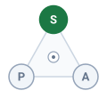
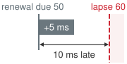

Sensor Perception
8 Sensor Perception

Purpose
Physical AI stack focus for this chapter.
Why can an accurate detection still be too late to guide a robot?
A camera can recognize an obstacle correctly and still report where it stood before the robot moved. Exposure, readout, transport, and inference all take time, the machine keeps moving through every millisecond of it, and a shifted mount or a misread clock then places the obstacle somewhere it never stood. None of these errors lowers a detection score. The worst of them, a frame stamped with the wrong time, narrows the estimate’s uncertainty around the wrong position, so the machine grows more confident as it grows more wrong. A machine that treats a recognized object as a current position spends its stopping clearance on errors nobody measured. Perception serves a moving machine only when each observation states when it was captured, where it was measured from, and how far it can be trusted, because at the causal boundary a stale or misplaced observation becomes motion that cannot be taken back, and the permission path can refuse only evidence whose age and limits it can check.
Learning Objectives
- Select sensing modalities by the physical quantity, coverage, and failure limits required for a spatial decision
- Diagnose exposure, rolling-shutter, and calibration errors before measurements enter a geometric estimate
- Calculate capture-to-dispatch age and account for continued aging through downstream consumption without double charging delay
- Evaluate whether stopping margins fit the available clearance once the clearance inset and clock bound rest on measured error, not reported covariance
- Distinguish qualified metric evidence from learned depth estimates and semantic confidence
- Diagnose silent sensor failures, including a misdated frame, that pass transport checks while misrepresenting the scene
- Design an observation contract whose timing, calibration, error qualification, and health checks support downstream use
Explore the concepts in this chapter
The volume’s concept map, opened on this chapter. Select a concept to read how it connects to ideas in other chapters. Open the full map ↗
8.1 Choosing Evidence for a Spatial Decision
A vision model on the warehouse mobile manipulator can detect a worker stepping past a rack upright with near-perfect benchmark accuracy and still hand the trajectory planner an obsolete position. The world keeps moving while the navigation camera integrates charge, serializes pixel rows across the bus, and runs inference through the vision pipeline. On this machine, 51.6 ms elapses between the midpoint of optical exposure and the dispatch of the processed observation (derived in the latency waterfall of section 8.4.1). Driving at its 1.5 m/s drive limit, the base covers 77.4 mm over that single interval. Benchmark accuracy reveals nothing about whether an observation is still fresh enough to support safe clearance. On a moving machine, every observation carries an expiration date.
Every motion a physical AI system executes rests on a claim about the world derived from earlier sensor readings. Perception converts raw energy incident on a detector (photons on a CMOS sensor array, laser pulses reflected to an avalanche photodiode, or elastomer deformation at a fingertip) into spatial claims: the volume a coworker occupies, the metric range to a rack upright, or the incipient slip of a grasped object. Machine perception has historically been scored by static recognition accuracy on fixed benchmarks, which rewards a correct label regardless of when the exposure occurred or how the camera was moving. For an embodied machine that abstraction collapses. A spatial claim can support motion only if it states three properties: the instant its energy was captured, the coordinate frame in which it was measured, and a bound on its spatial uncertainty. Set against the machine’s current velocity, that qualified uncertainty must fit inside the clearance that remains.
The evaluation record that closed Part II (The Evaluation Record) hands the runtime a list of obligations rather than a verdict of trust. It limits the learned proposer to its target operational design domain (ODD) and leaves the rest of the machine to supply the runtime monitors that hold it there (Verification Ceilings and the Exposure Wall). Two of those monitors, the input-support monitor and the latency and freshness monitor, can act only on observations that carry their capture time, frame, and uncertainty, so their first obligation falls on perception. Perception delivers this runtime evidence as dated spatial claims across the proposal boundary. It executes within the non-deterministic Brain above that boundary and holds no actuator authority. The deterministic permission path below the boundary evaluates each proposed action against the capture timestamps, coordinate frames, and error qualifications of the perceptual claims behind it. Part III’s governing law, proposal is not permission (principle 3), applies to perception in a specific way. A confident detection does not license motion. It is evidence behind a proposal, and the permission path can refuse that proposal only when the evidence carries an age, a frame, and an error bound it can check.
↩︎ The proposal boundary and permission path are established in The Machine in Five Levels.
Checking a claim against physical margin means following the evidence from capture to qualification. Each sensor type must first match the physical quantity an action requires. Calibration and detector physics then ground the measurement in space and time, the capture-to-dispatch age must be budgeted, and the spatial error, including the silent corruption no driver reports, must be bounded before any downstream check permits motion. The chapter closes by packaging those properties into an observation contract, so that a consumer can check a measurement’s age, frame, and error before reading a single payload byte. The contract is the first record of the runtime strand, which meets the limit record and the evaluation record at the permission decision. Perception ends once it yields a qualified measurement. Fusing such measurements across time into persistent spatial state is the work of state estimation and spatial memory in Spatial Memory.
Whether an architecture employs an end-to-end vision-language-action (VLA) policy (Brohan et al. 2023; Kim et al. 2024), an end-to-end visuomotor model without a language backbone (Zhao et al. 2023), or a modular estimator, it must reconcile the physical scene captured at a past instant with the kinematic state of the robot at execution. Architectural choices alter processing latency and representation formats, but no network topology can bypass photon integration, sensor readout, or bus transport delay. Explicit timestamps and spatial transforms keep this relationship inspectable; a latent representation holds it only implicitly, so checking it requires external instrumentation. Neither approach converts ambiguous sensor signals into ground truth. A specular reflection on a polished warehouse floor remains an optical hazard regardless of model capacity.
Zhao, Tony Z., Vikash Kumar, Sergey Levine, and Chelsea Finn. 2023. “Learning Fine-Grained Bimanual Manipulation with Low-Cost Hardware.” Robotics: Science and Systems (RSS). https://doi.org/10.15607/RSS.2023.XIX.016.
Navigating past a blind rack corner requires establishing a bounded occupied volume in the robot’s base coordinate frame before available stopping distance runs out. RGB appearance helps classify an object as a person, but monocular bearing alone cannot supply metric range. The navigation camera therefore requires corroborated depth measurements before its detections can justify motion clearance, and on the running machine the spinning LiDAR introduced below supplies them. At the end-effector, sensing requirements change completely. While external optical cameras guide the initial reaching approach, detecting contact mechanics, shear forces, and incipient slip requires tactile sensing directly at the fingertips. Sensor selection begins by identifying the physical quantity governing each action, followed by analyzing sensor coverage, update rates, and environmental failure modes.
Table 1 compares the physical evidence each sensing mechanism provides alongside the primary failure modes and safety checks required before fusing claims across an embodied sensor suite. Adding a secondary sensor mitigates a shared failure mode only when its independent spatial coverage, timing guarantees, extrinsic calibration, and correlated failure risks are established.
| Modality | Direct physical information | Main limitation | Permission-relevant check |
|---|---|---|---|
| RGB camera | Bearing, appearance, and image motion | Monocular depth scale is ambiguous; glare, darkness, and occlusion can hide objects | Fresh capture time and validated metric corroboration |
| Active stereo | Disparity-derived range with infrared texture projection | Sunlight washes out projected pattern; range error grows quadratically with distance (\(\TargetRange^2\)) | Range-dependent residual and bias validation |
| Structured light | High-density triangulated depth from projected coded patterns | Ambient solar infrared flooding; multi-robot pattern crosstalk; short range (\(<3\,\text{m}\)) | Lighting lux limits and pattern decoding integrity |
| Time-of-flight | Metric depth via phase delay (iToF) or photon arrival timing (dToF) | iToF phase wrapping; multipath reflections in corners; flying pixels on moving edges | Ambiguity distance and corner multipath flags |
| Pulsed LiDAR | Metric time-of-flight range at sampled laser beam directions | Near-field aerosol backscatter in fog/rain; retroreflector blooming; specular puddle dropouts | Qualified range, return quality, and scan timing |
| FMCW radar | Metric range and instantaneous radial Doppler velocity of targets | Multipath ghost returns off ground; lower angular resolution; antenna sidelobe clutter | Track association and coverage of crossing targets |
| Event camera | Asynchronous per-pixel log-intensity contrast events (\(\ge \EventContrastThreshold\)) | Unchanging scenes supply little event evidence; noise and flicker can still generate events | Event-rate health and independent metric depth source |
| Optical tactile | Contact micro-depth, surface normals, and shear force vectors | Zero sensing before physical contact; strictly localized to gripper elastomeric pad | Contact threshold, slip flags, and marker tracking |
On an operational robot, this division of responsibility is explicit and follows established industrial safety standards. Neither the vision model nor the spinning LiDAR owns the certified safety claim regarding an obstacle at the rack end. ISO 3691-4 mandates that an autonomous industrial truck detect persons in its path at Performance Level d (PL d) (International Organization for Standardization 2023b; TÜV Rheinland 2021), the second highest of the five reliability grades (a through e) defined in ISO 13849-1 (International Organization for Standardization 2023a). Mobile bases satisfy this mandate using an industrial safety laser scanner, a dual-channel planar time-of-flight sensor certified as an active opto-electronic protective device under IEC 61496-3 (International Electrotechnical Commission 2025; Keyence Corporation 2026). By design and certification standards, the safety scanner performs no semantic classification; it reports solely whether an opaque object has entered its protective optical field, directly triggering the certified emergency stop circuit.
International Organization for Standardization. 2023b. ISO 3691-4:2023: Industrial Trucks, Safety Requirements and Verification, Part 4: Driverless Industrial Trucks and Their Systems. International Organization for Standardization.
TÜV Rheinland. 2021. ISO 3691-4:2020: A Standard for Automated Guided Vehicles. White paper.
International Organization for Standardization. 2023a. ISO 13849-1:2023: Safety of Machinery, Safety-Related Parts of Control Systems, Part 1: General Principles for Design. International Organization for Standardization.
International Electrotechnical Commission. 2025. IEC 61496-3:2025: Safety of Machinery, Electro-Sensitive Protective Equipment, Part 3: Particular Requirements for Active Opto-Electronic Protective Devices Responsive to Diffuse Reflection (AOPDDR). International Electrotechnical Commission.
Keyence Corporation. 2026. SZ-V Series Safety Laser Scanner: Specifications. Product specification page.
The mobile base’s spinning LiDAR (an Ouster OS1-64) carries no functional safety rating; its datasheet certifies only electrical, laser, and electromagnetic compatibility (Ouster, Inc. 2025). Instead, it provides the dense 3D metric range field that the permission path evaluates against spatial clearance limits. The permission path runs on its own safety microcontroller (MCU), as The Nervous System placed it, but the clearance evaluation it performs there is an unrated admission check, a software layer above the certified safety scanner. Two components therefore guard the rack end, the permission path’s unrated clearance check and the certified scanner beneath it. The permission path’s role is to keep learned proposals smooth and proactive, adjusting trajectories well before the robot approaches the scanner’s protective boundary and causes an abrupt hardware stop.
↪ The certified drive, scanner, and arm safety functions beneath the permission path, and the one rated watchdog on it, are developed in Certified safety functions beneath the permission path.
Meanwhile, the navigation camera enriches the learned proposer with semantic context: distinguishing a coworker from a stationary tote and predicting velocity headings. Because the proposer constructs its trajectory predictions relative to the camera frame, that image frame’s capture timestamp defines the evidence epoch carried by the resulting motion proposal. Section 8.4.2 details how the high-rate LiDAR stream is synchronized and cross-dated against this camera epoch. When operational conditions shift, other sensors fill the gaps: active illumination resolves textureless surfaces, event cameras preserve high-speed edge transitions across wide dynamic ranges, and tactile arrays capture localized contact dynamics that remote cameras cannot see. Before any of these sensors can anchor downstream motion, however, the system must account for how physical capture and mounting geometry distort the raw signal.
8.2 Capture Physics and Calibration
When photons from a warehouse rack upright strike the navigation camera’s silicon detector, they do not become an instantaneous feature tensor in host memory. Before a neural backbone or state observer ever reads the frame, the photodiode array must accumulate charge over a finite exposure window, serialize rows off the sensor die, and move bytes across the interconnect, while the robot keeps moving through every millisecond of that process. In CMOS active-pixel sensors, incident photons generate electron-hole pairs through the photoelectric effect according to a wavelength-dependent quantum efficiency \(\PhotodiodeQuantumEfficiency(\OpticalWavelength)\). Silicon photodiodes accumulate this photocharge across a finite exposure interval \(\ExposureDuration\), collecting total charge: \[\CollectedPhotocharge = \int_0^{\ExposureDuration} \frac{\ElementaryCharge \PhotodiodeQuantumEfficiency(\OpticalWavelength)}{\PlanckConstant \OpticalFrequency} \IncidentOpticalPower(\TimeInstant)\,d\TimeInstant\] where \(\ElementaryCharge\) is the elementary charge, \(\PlanckConstant\) is Planck’s constant, \(\OpticalFrequency\) is optical frequency, and \(\IncidentOpticalPower(\TimeInstant)\) is incident optical power. Exposure integration, readout serialization, bus transport across PCIe or MIPI CSI, memory staging, preprocessing kernels, and neural backbone inference each consume a slice of the end-to-end latency budget.
Because the photodiode accumulates charge over the finite exposure duration \(\ExposureDuration\), the captured frame integrates scene radiance over time while both the robot and the surrounding environment are in motion. Assuming approximately constant linear velocity \(\Velocity\) and angular velocity \(\AngularVelocity\), with the optical center displaced from the vehicle’s center of rotation by lever arm \(\SensorLeverArm\), a conservative bound on the physical displacement of the camera center during exposure is: \[\ExposureMotionDisplacement = \|\Velocity\| \, \ExposureDuration + \|\AngularVelocity \times \SensorLeverArm\| \, \ExposureDuration\] This distance measures the physical displacement of the camera center, not the pixel footprint of the blur on the detector plane. Projecting this displacement into image pixels requires scene depth, focal length, viewing direction, and relative attitude changes. Pure rotational motion can smear the image severely even when the camera center remains completely stationary. The resulting motion blur acts as a low-pass spatial filter, attenuating image gradients and destroying high-frequency edge information before neural feature extraction or corner detection can run. Downstream estimators can use accurate timestamps and extrinsic calibrations to position the blurred observation at its capture epoch, but no coordinate transformation can synthesize geometric detail lost during optical integration.
The finite integration window also determines which physical instant the resulting image represents. Under an idealized linear sensor response, the pixel value reflects incoming scene radiance \(\SceneRadiance(\TimeInstant)\) integrated across the exposure window: \[\IntegratedPixelResponse = \int_{0}^{\ExposureDuration} \SceneRadiance(\TimeInstant)\,d\TimeInstant\]
The exposure midpoint is the reference epoch assigned to the integrated image, exactly \(\ExposureDuration/2\) after the shutter opens and \(\ExposureDuration/2\) before it closes. This convention dates the measurement without making its blurred content an instantaneous sample; changes in illumination or motion within the window still require qualification. For the mobile base running at its 1.5 m/s drive limit with the navigation camera configured to a 16 ms exposure, the frame represents the scene where the robot was 8 ms earlier, while the robot traverses 24 mm of translation during the exposure itself. Exposure time is a configured software parameter rather than an immutable hardware constant. The warehouse mobile manipulator configures this relatively long exposure to operate reliably in dim aisle lighting; higher ambient illumination permits shorter integration times, scaling down both motion blur and midpoint latency proportionally.
8.2.1 Rolling shutter distortion and motion compensation
Assigning a single exposure midpoint to an entire image assumes that every pixel row integrates light over that same window. In a global shutter sensor, every photodiode integrates charge during the exact same time window and transfers accumulated electrons to shielded in-pixel storage nodes simultaneously. In contrast, cost and silicon die area constraints often dictate the use of a rolling shutter sensor, where rows are reset, exposed, and read out sequentially from top to bottom (\(\SensorRowIndex = 0\) to \(\SensorRowIndex = \ImageHeight - 1\)). Each successive scanline begins its exposure after an incremental row readout period \(\RollingShutterRowReadout\), introducing a progressive time skew across the vertical axis: \[\RowExposureStartTime(\SensorRowIndex) = \FrameExposureStartTime + \SensorRowIndex \cdot \RollingShutterRowReadout\] where \(\FrameExposureStartTime\) denotes the exposure start time of the initial row (\(\SensorRowIndex = 0\)). When the vehicle translates at linear velocity \(\Velocity\) perpendicular to a vertical object, scanline \(\SensorRowIndex\) samples that object at an along-track spatial offset: \[\RollingShutterDistortion(\SensorRowIndex) = \Velocity \cdot \SensorRowIndex \cdot \RollingShutterRowReadout \tag{1}\] Rolling shutter skew across camera streams met this row timing as a skew that corrupts the pairing of a logged frame with an action. On a moving base the same skew becomes the spatial offset of equation 1, and it is charged against clearance.
Under angular motion, rolling shutter distortion becomes non-linear. If the camera rotates with angular velocity vector \(\AngularVelocity = [\XAxisAngularRate, \YAxisAngularRate, \YawRate]^\top\) (for example, rapid yaw or pitch during aggressive vehicle maneuvers), the camera attitude drifts continuously throughout the readout phase. The optical axis points in a slightly different direction for every single scanline. For a row at vertical coordinate \(\SensorRowIndex\), the incremental rotation relative to the start of the frame is approximately \(\RowAttitudeIncrement(\SensorRowIndex) \approx \AngularVelocity \cdot \SensorRowIndex \cdot \RollingShutterRowReadout\). This line-dependent rotation bends straight structural lines into curves, stretches or compresses vertical scale during pitching motions, and shears vertical surfaces into inclined planes, as photographed on the rotating propeller blades in figure 2.
Consider the warehouse mobile manipulator navigating past a vertical rack upright at its 1.5 m/s drive limit. A vertical post that spans the full frame height does not appear vertical in the raw pixel array, because the sensor reads the bottom scanline (\(\SensorRowIndex =\) 3,039) an entire readout cycle after the top scanline (\(\SensorRowIndex = 0\)). This delay induces two distinct geometric errors that consume separate safety margins: along-track translation shears the upright along the direction of travel, while base yaw during a turn shifts the feature laterally. Notebook 8.1 quantifies both effects.
Napkin Math 8.1: The readout shear
Problem: The base passes a rack upright at its drive limit while turning into the aisle. How far apart does the navigation camera record the upright’s top and bottom rows, and what share of the corresponding clearance allowance does each error consume?
Variables:
- Rows \(\ImageHeight =\) 3,040 and readout \(\FrameReadoutTime =\) 16.6 ms (Datasheet, full-resolution mode).
- Drive limit \(\BaseTravelSpeed =\) 1.5 m/s (Illustrative).
- Yaw rate \(\YawRate =\) 0.5 rad/s while turning into the aisle, at the rack-end range \(\TargetRange =\) 1.10 m (Illustrative).
- Localization allowance \(\LocalizationBound =\) 50 mm, the along-travel term of the stopping budget (Kinematic stopping distance and pre-brake delay), and side clearance 0.15 m, the gap the base keeps between its flank and the rack faces while it drives the aisle (both Illustrative; The machine data sheet).
Math:
Row interval. \[t_{\text{row}} = \frac{t_{\text{readout}}}{H} = \frac{16.6\ \text{ms}}{3040} = 5.46\ \mu\text{s}\]
Along-track skew. At the last row, equation 1 gives \[\Delta x = v\,t_{\text{readout}} = 1.5\ \text{m/s} \times 16.6\ \text{ms} = 24.9\ \text{mm}, \quad \frac{\Delta x}{\delta_{\text{loc}}} = \frac{24.9\ \text{mm}}{50\ \text{mm}} = 0.50\]
Lateral skew. The bearing rotates by \(\YawRate\,\FrameReadoutTime\) during readout, which moves the upright sideways at range \(\TargetRange\) by \[\Delta y = z\,\omega\,t_{\text{readout}} = 1.10\ \text{m} \times 0.5\ \text{rad/s} \times 16.6\ \text{ms} = 9.1\ \text{mm}, \quad \frac{9.1\ \text{mm}}{150\ \text{mm}} = 0.061\]
Sensitivity. At the aisle’s chosen 1.3 m/s, the along-track skew is still 21.6 mm, 43.2 percent of \(\LocalizationBound\).
Result: The bottom rows see the upright from a camera position 24.9 mm farther down the aisle than the top rows did, half of \(\LocalizationBound\). Yaw adds 9.1 mm sideways, about 6.1 percent of the side clearance.
Systems insight: Uncorrected, one readout would spend half of the localization allowance that the stopping budget holds for the whole state estimate, and slowing to aisle speed barely helps. The budget’s \(\LocalizationBound\) is therefore valid only if the skew is removed before the estimator sees the frame. The lateral term is small at the rack end, but it grows with range and turn rate, so it belongs in the calibration and timing checks rather than in a budget row.
The along-track error charges directly against the localization allowance \(\LocalizationBound\) established in Kinematic stopping distance and pre-brake delay. Treating the image as an instantaneous rigid perspective projection mistakenly models the bottom of the upright as closer along the corridor than the top, directly consuming the along-travel stopping allowance. Both error components scale linearly with total readout time. A global-shutter sensor, such as the wrist camera on the arm, eliminates scanline skew at the expense of larger pixel pitch and higher silicon cost. Selecting a shutter architecture is therefore a primary systems decision whenever a sensor’s measurements inform clearance boundaries. The running machine deliberately carries a rolling-shutter navigation camera on its base, so its perception pipeline must handle this constraint rather than avoid it.
Resolving this spatial artifact requires rolling-shutter motion compensation: unwarping image coordinates geometrically using an interpolated camera pose for every scanline. The onboard IMU supplies high-rate (1,000 Hz) angular velocity and specific-force1 samples rather than direct velocity measurements. A fused state estimator integrates these inertial readings with bias estimates, gravity tracking, and wheel odometry to compute continuous body poses. Transforming these poses through calibrated body-to-camera extrinsics yields an estimated optical pose for each scanline, allowing the perception pipeline to rectify the image before running stereo matching or landmark triangulation. Plotted against row index, the uncompensated skew is a straight line, because each row is read a fixed interval after the one above it (figure 1). The line ends halfway to the 50 mm allowance, which is why compensation, not a budget row, must absorb it.
1 Specific Force: An accelerometer measures non-gravitational acceleration, \(\LinearAcceleration-\GravityVector\), so a unit resting on the floor reads one \(\Gravity\) upward and one in free fall reads zero. Dead reckoning must therefore rotate specific force into the navigation frame and restore the gravity vector, and an attitude error \(\AttitudeError\) leaks \(\Gravity\sin\AttitudeError\) into horizontal acceleration, which integrates twice into the per-row poses that de-skewing relies on.


Geometric unwarping must precede spatial interpretation, as the detached propeller blades of figure 2 show. Because scanlines are exposed and read in sequence rather than simultaneously, rapid motion shears radial structures across rows. Learned feature backbones can misinterpret row-by-row shear as intrinsic physical geometry, while classical stereo matchers fail when scanline displacement shifts correspondences off the calibrated epipolar line.2 Scaling up model capacity cannot compensate for uncorrected physical sampling distortion; the network learns biased geometric representations instead.
2 Epipolar Line: For a calibrated camera pair, a point seen in one image can appear in the other only along one line, the projection of the ray from the first camera’s center through that point (section 8.6 derives it). Stereo matchers search that line alone, so a rolling-shutter shear that moves a correspondence even one row off it produces a mismatch rather than a slightly worse match.
8.2.2 Camera calibration
Unwarping a rolling-shutter image still leaves a pixel without a physical direction or position if the camera’s internal lens parameters or chassis mount have shifted. Under the pinhole camera model (Hartley and Zisserman 2003), the intrinsic matrix \(\CameraIntrinsicCalibrationMatrix\) maps a point \(\CameraFramePoint = [\CameraFrameHorizontalCoordinate, \CameraFrameVerticalCoordinate, \CameraFrameDepth]^\top\) in the camera’s optical frame to the pixel \([\PixelColumnCoordinate, \PixelRowCoordinate]^\top\): \[\HomogeneousPixelCoordinates \sim \frac{1}{\CameraFrameDepth} \CameraIntrinsicCalibrationMatrix \CameraFramePoint = \frac{1}{\CameraFrameDepth} \begin{bmatrix} \HorizontalFocalLength & 0 & \PrincipalPointColumn \\ 0 & \VerticalFocalLength & \PrincipalPointRow \\ 0 & 0 & 1 \end{bmatrix} \begin{bmatrix} \CameraFrameHorizontalCoordinate \\ \CameraFrameVerticalCoordinate \\ \CameraFrameDepth \end{bmatrix} \tag{2}\] where \(\HorizontalFocalLength, \VerticalFocalLength\) are focal lengths in pixels and \((\PrincipalPointColumn, \PrincipalPointRow)\) is the principal point. Inverting the map recovers only a bearing ray, along which every depth is consistent with the pixel: \[\BearingRay(\HomogeneousPixelCoordinates) = \CameraIntrinsicCalibrationMatrix^{-1} \HomogeneousPixelCoordinates = \begin{bmatrix} \frac{\PixelColumnCoordinate - \PrincipalPointColumn}{\HorizontalFocalLength} \\ \frac{\PixelRowCoordinate - \PrincipalPointRow}{\VerticalFocalLength} \\ 1 \end{bmatrix} \tag{3}\]
This bearing ray emanates from the camera’s optical center at the precise instant of photon capture \({\CaptureTimestamp}_0\). If downstream motion planning unprojects \(\BearingRay(\HomogeneousPixelCoordinates)\) using the robot’s current pose instead of its historical capture pose, the current evidence age at that downstream use, \(\CurrentMonotonicTime - {\CaptureTimestamp}_0\), translates the ray origin by \(\ObservationAgeDisplacement = \int_{{\CaptureTimestamp}_0}^{\CurrentMonotonicTime} \Velocity(\TimeInstant)\,d\TimeInstant\). These timing and angular errors scale along entirely different physical axes. At the 1.5 m/s drive limit, each millisecond of unmodeled latency shifts the ray origin by 1.5 mm, making the dispatch-age contribution of 51.6 ms displace the origin by 77.4 mm. Attitude errors, by contrast, scale with range. A single degree of orientation misalignment shifts a target at the 1.10 m rack-end distance by 19.2 mm laterally, expanding proportionally with distance. Unchecked, either discrepancy can push a physical rack upright entirely outside the bounding volume evaluated by the permission path. A single monocular camera cannot recover metric range along its bearing rays; scale must be supplied by stereo disparity, an active ranging sensor, or a learned geometric prior, and each introduces uncertainty that section 8.6 audits against the operating clearance budget. Optical lens distortion is rectified inside the hardware image signal processor (ISP) stage detailed in table 3. Camera Projective Geometry and Covariance Propagation develops the full projection equations, radial distortion models, and Zhang’s planar calibration method (Zhang 2000).
Spatial extrinsics and temporal synchronization between the camera and the IMU must be calibrated jointly (Furgale et al. 2013). An extrinsic orientation error \(\ExtrinsicMisalignmentAngle\) misplaces an observed feature at depth \(\TargetRange\) by approximately \(\TargetRange\,\ExtrinsicMisalignmentAngle\), while spatial translation between the camera center and the IMU introduces the centripetal and tangential lever-arm accelerations given in Spatial coordinate frames and lever-arm kinematics. Similarly, an uncalibrated temporal offset \(\CameraImuTimeOffset\) between image exposure and inertial sampling causes an effective orientation error of \(\YawRate\,\CameraImuTimeOffset\) while turning at angular velocity \(\YawRate\). This timing skew displaces the reconstructed feature by approximately \(\TargetRange\,\YawRate\,\CameraImuTimeOffset\), growing with both vehicle yaw rate and target distance. Hardware-latching exposure triggers and IMU clock signals to a shared real-time counter bounds this synchronization offset to sub-microsecond regimes, leaving small residual latencies for online filtering. Because mechanical shocks and thermal expansion degrade calibration over time, every observation packet must record its calibration identifier alongside its empirical operating envelope.
8.2.3 Choosing metric depth for the aisle
Because a single bearing ray leaves range undetermined, robotic systems often pair passive cameras with active optical depth cameras to recover scale. In a warehouse aisle, however, ambient lighting, surface material properties, and multi-robot optical interference dictate which depth-sensing principle survives in practice. Structured light projects a known pseudo-random or coded infrared pattern onto the scene and triangulates surface deformation using an offset receiver camera. Although this active pattern injects distinct visual texture onto featureless cardboard cartons, direct sunlight from skylights or open loading docks easily washes out the projected infrared pattern, and overlapping projectors from adjacent mobile bases create optical interference that corrupts feature correspondence. Engineering qualification must therefore evaluate the operating environment under peak ambient lux and multi-robot contention rather than treating structured light as an unconditional depth source.
Rather than triangulating a spatial pattern, indirect time-of-flight (iToF) calculates distance by measuring the phase shift of continuous-wave amplitude-modulated infrared light. Phase differences yield dense range maps with compact hardware. Modulation periodicity, however, creates phase wrapping and distance ambiguity intervals. Multipath reflections in metallic warehouse corners and industrial shelving also send diffuse photons along several bounces, which bias the depth estimate. Motion between sequential phase exposures also introduces edge artifacts in dynamic scenes. Direct time-of-flight (dToF) avoids periodic phase wrapping by measuring the arrival times of discrete photon pulses using single-photon avalanche diodes (SPADs), yet it remains subject to timing jitter in the receiver discriminator, multipath contamination, and optical pile-up from high-reflectance foregrounds.
Active stereo combines structured infrared illumination with a calibrated stereo camera pair. Unlike structured light systems that must decode a proprietary pattern, active stereo uses projected speckle purely to synthesize artificial texture on smooth surfaces while computing standard epipolar stereo correspondence. If bright ambient light washes out the infrared pattern, the underlying stereo pipeline continues operating over ambient visible texture; if a smooth surface lacks ambient texture, however, high illumination alone still cannot resolve depth. The range-dependent uncertainty analysis in section 8.6 determines whether active stereo depth uncertainty satisfies the robot’s required stopping clearance.
For the rack end, the running machine carries none of these depth cameras. Each of these active principles has a failure mode the aisle supplies, whether daylight through open dock doors, a neighboring base’s projector, or multipath off metal shelving. The machine’s metric range comes instead from the OS1-64 LiDAR described later, and the navigation camera contributes bearing and class. Stereo returns in section 8.6 only as an illustrative rig that shows where a camera-only design meets a range wall.
8.2.4 Event cameras and asynchronous contrast
Conventional CMOS sensors integrate photons over a fixed exposure window, forcing a trade-off between motion blur on fast targets and photon starvation in dim aisles. Neuromorphic event cameras (Dynamic Vision Sensors, or DVS)3 avoid frame-rate exposure trade-offs by abandoning discrete frames entirely (Lichtsteiner et al. 2008; Gallego et al. 2022). Each pixel on an event sensor array operates autonomously, containing a logarithmic photodiode, an analog amplifier, and two differential voltage comparators. The pixel continuously monitors incoming scene radiance \(\SceneRadiance(\PixelColumnCoordinate, \PixelRowCoordinate, \TimeInstant)\). Whenever the temporal change in logarithmic intensity exceeds a configurable contrast threshold \(\EventContrastThreshold\), the pixel emits an asynchronous digital event packet \(\EventPacket_k\): \[|\FiniteChange \ln \SceneRadiance(\PixelColumnCoordinate, \PixelRowCoordinate, \TimeInstant)| = |\ln \SceneRadiance(\PixelColumnCoordinate, \PixelRowCoordinate, \TimeInstant) - \ln \SceneRadiance(\PixelColumnCoordinate, \PixelRowCoordinate, \PixelLastEventTime)| \ge \EventContrastThreshold\] \[\EventPacket_k = \langle \PixelColumnCoordinate_k, \PixelRowCoordinate_k, \TimeInstant_k, \EventPolarity_k \rangle\] where \((\PixelColumnCoordinate_k, \PixelRowCoordinate_k)\) is the pixel address, \(\TimeInstant_k\) is the event timestamp latched with microsecond resolution (\(1\text{--}10\,\MicroUnitPrefix\text{s}\)), and \(\EventPolarity_k \in \{-1, +1\}\) is the polarity indicating whether radiance increased or decreased.
3 Neuromorphic: Carver Mead coined the term at Caltech for analog circuits that compute the way neural tissue does (Mead 1990), and the silicon retina built in his group is the ancestor of the Dynamic Vision Sensor (Lichtsteiner et al. 2008). Like the retina, each pixel reports change rather than level, so an obstacle that stands still in front of a stationary sensor produces no events and is invisible to it.
Mead, C. 1990. “Neuromorphic Electronic Systems.” Proceedings of the IEEE 78 (10): 1629–36. https://doi.org/10.1109/5.58356.
Lichtsteiner, Patrick, Christoph Posch, and Tobi Delbruck. 2008. “A 128 \(\times\) 128 120 dB 15 \(\mu\)s Latency Asynchronous Temporal Contrast Vision Sensor.” IEEE Journal of Solid-State Circuits 43 (2): 566–76. https://doi.org/10.1109/JSSC.2007.914337.
Event sensing preserves the temporal fidelity of high-speed edge transitions without waiting for a complete exposure cycle and serial scanline readout, providing high temporal resolution for rapid maneuvers. The systems trade-off lies in the nature of temporal contrast. Static obstacles produce zero events when the camera is stationary, so an unmoving obstacle is undetectable without ego-motion. Furthermore, high-frequency fluorescent lighting flicker and thermal noise generate spurious event bursts. The bandwidth demand across the physical sensor interface is therefore dynamic and scene-dependent rather than deterministic and fixed.
Downstream estimation algorithms must convert asynchronous coordinate streams in \((\PixelColumnCoordinate, \PixelRowCoordinate, \TimeInstant)\) space into representations suitable for neural networks or state observers. Accumulating events into fixed time slices allows the use of standard convolutional backbones but reintroduces latency; processing individual event timestamps maintains sub-millisecond temporal responsiveness at the cost of specialized asynchronous graph or spiking architectures. Neither representation provides absolute metric depth without stereo baseline pairing or active sensor fusion. For the rack-end decision, an event camera would add edge timing but no range, and it would lose a worker who stops at the corner, so the running machine does not carry one.
8.2.5 LiDAR and radar ranging
Passive cameras cannot measure metric distance along a single viewing ray, and short-range depth cameras fail when dock sunlight or metal shelving corrupts their patterns. Active ranging sensors, principally Light Detection and Ranging (LiDAR) and Radio Detection and Ranging (radar), overcome these limits by emitting structured electromagnetic energy and timing its return to measure metric range and radial velocity directly. Pulsed time-of-flight LiDAR calculates radial distance \(\RadialRange\) by measuring the round-trip flight duration \(\PulseRoundTripTime\) of an emitted laser pulse traveling at the speed of light \(\VacuumLightSpeed\): \[\RadialRange = \frac{\VacuumLightSpeed \cdot \PulseRoundTripTime}{2}\] In three-dimensional space, optical scanners steer each pulse along azimuth \(\LidarAzimuthAngle\) and elevation \(\LidarElevationAngle\), casting an emitted ray along unit direction vector \(\LidarBeamDirection(\LidarAzimuthAngle, \LidarElevationAngle) = [\cos\LidarElevationAngle\cos\LidarAzimuthAngle, \; \cos\LidarElevationAngle\sin\LidarAzimuthAngle, \; \sin\LidarElevationAngle]^\top\). When reflected energy trips the receiver threshold after flight time \(\PulseRoundTripTime\), the sensor unprojects the return into a 3D point in the sensor frame \(\LidarReferenceFrame\) via ray casting (equation 4): \[\LidarFramePoint = \RadialRange \cdot \LidarBeamDirection(\LidarAzimuthAngle, \LidarElevationAngle) = \frac{\VacuumLightSpeed \cdot \PulseRoundTripTime}{2} \begin{bmatrix} \cos\LidarElevationAngle \cos\LidarAzimuthAngle \\ \cos\LidarElevationAngle \sin\LidarAzimuthAngle \\ \sin\LidarElevationAngle \end{bmatrix} \tag{4}\]
Spatial uncertainty in this unprojected 3D point decomposes into two distinct physical mechanisms:
- Radial uncertainty (\(\RadialRangeStandardDeviation\)): Governed by receiver discriminator timing jitter \(\ReceiverTimingJitter\) and pulse rise time, \(\RadialRangeStandardDeviation = \frac{\VacuumLightSpeed}{2} \ReceiverTimingJitter\) remains approximately constant across operating distances until return signal attenuation drops photon counts near the detection threshold. The manufacturer datasheet for the robot’s OS1-64 specifies a one-standard-deviation precision between 5 mm and 30 mm beyond 1 m. It also specifies a systematic accuracy bias of 25 mm on diffuse targets in the specified 1024×10 Hz mode (Ouster, Inc. 2025). These are datasheet scales, not qualified bounds for the running machine’s selected scan mode, surfaces, and motion. The accuracy figure describes the bias of the mean, a calibration offset that temporal averaging cannot remove.
- Transverse footprint: Governed by optical beam divergence \(\BeamDivergenceAngle\); internal angular encoder quantization contributes a separate bearing error. The laser pulse expands into a narrow cone rather than propagating along an infinitesimal line. Taking \(\BeamDivergenceAngle\) as the full-angle divergence, the transverse spot diameter scales as range times divergence. At \(\RadialRange =\) 30 m, the illustrative 2 mrad divergence gives a 60 mm spot diameter. This geometric footprint is not a standard deviation of position error. When it strikes a surface boundary, the detector receives mixed returns from foreground and background, blurring geometric edges; the resulting error distribution must be measured.
4 Laser Class 1: The class of IEC 60825-1 whose emission is safe under all reasonably foreseeable viewing, including through optical instruments (International Electrotechnical Commission 2014). Below about \(1{,}400\,\text{nm}\) the eye focuses the beam onto the retina, while at \(1{,}550\,\text{nm}\) the cornea and lens absorb it first, so the permitted pulse energy is far higher. Those longer wavelengths need indium gallium arsenide detectors rather than silicon, which makes wavelength a range vs. cost choice made under a fixed safety ceiling.
International Electrotechnical Commission. 2014. IEC 60825-1:2014: Safety of Laser Products, Part 1: Equipment Classification and Requirements. International Electrotechnical Commission.
Most terrestrial systems operate either at near-infrared wavelengths below \(1{,}000\,\text{nm}\), where silicon detectors respond, or at an eye-safe \(1{,}550\,\text{nm}\) (permitting higher pulse energies under IEC 60825-1 Class 1 laser regulations).4 The machine’s OS1-64 is of the first kind; it emits at 865 nm as a Class 1 laser product (Ouster, Inc. 2025). Mechanical spinning LiDAR systems rotate an array of 16 to 128 laser diodes and avalanche photodiode (APD) detectors across an internal spindle at \(10\text{--}20\,\text{Hz}\) to sweep a \(360^\circ\) panoramic point cloud.
Much like rolling-shutter cameras expose scanlines in sequence, a spinning mechanical LiDAR does not record an instantaneous 3D snapshot. Completing a full \(360^\circ\) azimuth sweep requires \(\LidarSweepPeriod = 1/\LidarScanRate\), corresponding to 50 ms on the machine’s OS1-64 configured at 20 Hz. If the mobile base translates at velocity \(\Velocity\) and rotates at angular velocity \(\AngularVelocity\) while the sensor spins, pulses fired at the start of the sweep (\(\LidarAzimuthAngle = 0^\circ\)) and near completion (\(\LidarAzimuthAngle = 360^\circ\)) originate from physically distinct vehicle poses. At the 1.5 m/s drive limit and an illustrative 0.5 rad/s turn rate, the robot travels 75 mm and rotates 25 mrad (1.4°) during a single scan. Without motion correction, this sampling lag produces an apparent geometric tear where the end of the revolution meets the beginning, while shearing vertical structures across the corridor.
Restoring rigid geometric fidelity requires continuous-time LiDAR de-skewing. The sensor hardware latches each point return \(\CartesianPosition_i\) with an exact firing timestamp \(\TimeInstant_i \in [\LidarSweepStartTime, \LidarSweepStartTime + \LidarSweepPeriod]\). A rigid pose transformation \(\Pose \in \text{SE}(3)\) encapsulates orientation and translation. In the two-subscript convention, the first subscript names the destination frame and the second names the source: T_ab maps coordinates from frame b to frame a, and its inverse maps back. A homogeneous point appends a final coordinate of 1 so that the matrix applies translation as well as rotation. Spatial coordinate frames and lever-arm kinematics develops this representation and composition; section 8.3.1 applies it to the machine’s mounting chain. Combining high-frequency (1,000 Hz) inertial data with wheel odometry allows the state estimator to compute the continuous trajectory of the vehicle body frame, \(\WorldBodyTransform(\TimeInstant_i)\). Applying the calibrated mounting extrinsic \(\BodyLidarTransform\) transforms coordinates from the LiDAR frame to the body frame, yielding the world-frame sensor pose \(\WorldLidarTransform(\TimeInstant_i) = \WorldBodyTransform(\TimeInstant_i)\BodyLidarTransform\). Each individual homogeneous point return is then projected back into the LiDAR’s coordinate frame at the frame reference epoch \(\LidarSweepStartTime\): \[\CartesianPosition_i(\LidarSweepStartTime) = \WorldLidarTransform^{-1}(\LidarSweepStartTime) \cdot \WorldLidarTransform(\TimeInstant_i) \cdot \CartesianPosition_i(\TimeInstant_i)\] De-skewing is what makes an accumulated LiDAR map usable. The returns registered in figure 3, gathered over about 18 s of driving through a city intersection, keep crisp building facades, road striping, and parked vehicles only because each return was placed with the vehicle pose at its own firing epoch \(\TimeInstant_i\). Independently moving obstacles in the environment require separate velocity estimation and clustering. Flash LiDAR architectures avoid sweep distortion altogether by illuminating the entire field of view with a single laser pulse to capture an instantaneous 3D range matrix. Distributing finite optical pulse energy across a wide solid angle, however, sharply limits maximum operational range compared to concentrated, steerable beams.


Millimeter-wave radar offers an orthogonal active sensing channel, operating in the \(76\text{--}81\,\text{GHz}\) band (\(\RadiationWavelength \approx 3.9\,\text{mm}\)). Rather than emitting short, high-energy pulses, Frequency-Modulated Continuous-Wave (FMCW) radar transmits linear frequency chirps whose instantaneous carrier frequency sweeps across bandwidth \(\text{BW}_{\text{chirp}}\) over chirp duration \(\ChirpDuration\) with slope \(\ChirpSlope = \text{BW}_{\text{chirp}} / \ChirpDuration\). When the emitted waveform reflects from an obstacle at range \(\RadialRange\), the echo returns delayed by round-trip flight time \(\EchoRoundTripTime = 2\RadialRange/\VacuumLightSpeed\). Mixing the received echo with a replica of the transmitted signal generates an intermediate frequency (IF) beat tone at frequency \(\BeatFrequency\): \[\BeatFrequency = \ChirpSlope \cdot \EchoRoundTripTime = \frac{2 \RadialRange \, \text{BW}_{\text{chirp}}}{\VacuumLightSpeed \, \ChirpDuration}\] Computing a fast Fourier transform across the digitized fast-time samples of each chirp (the Range-FFT) extracts metric range \(\RadialRange\) directly, without requiring optical contrast or ambient scene illumination. Physical range resolution depends strictly on total sweep bandwidth: \[\RadarRangeResolution = \frac{\VacuumLightSpeed}{2\,\text{BW}_{\text{chirp}}}\] For a standard 4 GHz radar sweep (\(77\text{--}81\,\text{GHz}\)), FMCW radar achieves a fine range resolution of \(\RadarRangeResolution \approx\) 3.75 cm. The transmitted chirps simultaneously encode radial velocity and bearing. A moving target shifts the phase of successive chirp reflections proportionally to its Doppler velocity; evaluating a second Fourier transform across chirps (the Doppler-FFT) extracts this radial velocity within a single coherent processing interval, avoiding the latency and noise of multi-frame position differencing. Array processing across multiple receive antennas resolves target azimuth and elevation, albeit at substantially coarser angular resolution than optical LiDAR. The running machine does not mount radar, but millimeter-wave sensing is a primary modality on outdoor autonomous platforms. Its millimeter wavelength penetrates the dust, fog, and steam that scatter optical wavelengths (section 8.7). However, radar returns remain sensitive to specular scattering, surface orientation, and multi-path ghost targets, providing complementary evidence rather than an infallible, all-weather guarantee.
8.2.6 Tactile contact sensing
At the end-effector interface, external cameras and range finders cannot measure contact pressure or verify friction adhesion during physical manipulation; indeed, the gripper structure often occludes the contact patch entirely. An optical tactile sensor5 addresses this perceptual blind spot by mounting a compliant, internally illuminated elastomer membrane on the fingertip and imaging its deformation with an internal camera. Photometric stereo algorithms translate surface shading into calibrated local contact topography, while tracking arrays of embedded fiducial markers yields direct measurements of tangential shear strain and incipient slip. Converting these raw optical deformations into a calibrated contact wrench requires a validated finite-element or empirical model that accounts for elastomer hysteresis, dynamic loading, and mechanical wear over time.
5 GelSight: Adelson’s group at MIT turned a reflective elastomer skin and an internal camera into a contact sensor that recovers surface geometry and, from painted markers, shear force (Yuan et al. 2017). The design makes touch one more image stream, so a tactile frame carries an exposure, a readout, and a calibration of its own and must be dated and qualified like the navigation camera’s.
Yuan, Wenzhen, Siyuan Dong, and Edward H. Adelson. 2017. “GelSight: High-Resolution Robot Tactile Sensors for Estimating Geometry and Force.” Sensors 17 (12): 2762. https://doi.org/10.3390/s17122762.
Tactile sensing thus governs the terminal contact phase of robotic grasping, whereas external cameras and range sensors guide the initial approach trajectory. Across both regimes, downstream estimators cannot treat sensor outputs as timeless, unframed tensors. Every tactile frame and spatial point cloud carries a finite physical age, a mounting transform, and a calibration uncertainty that must be attached to the measurement before any consumer can use it.
8.3 Dating and Placing the Measurement
A frame from the navigation camera lands in host memory as an array of pixel values. Nothing in that array says when the light was captured, where the camera was mounted, or how far a position read from it can be trusted, yet the planner that checks rack-end clearance needs all three. Every modality has the same gap. A trajectory optimizer cannot plan against unorganized time-of-flight returns, and a force controller cannot track a grid of raw intensities. Downstream estimation, planning, and spatial memory require structured measurements: metric positions, bounding volumes, and semantic classes, with directly measured velocity where the sensing modality supplies it. Translating raw streams into those measurements is the perception pipeline’s responsibility. Whatever form its output takes, whether an explicit message packet or an observation token sequence, it must carry three mandatory properties before any consumer can use it: a capture timestamp, a reference frame, and a qualified uncertainty envelope.

The Sense stage: photons become dated, framed claims.The first mandatory property is the capture timestamp \({\CaptureTimestamp}_0\), which specifies the temporal midpoint of the energy integration window, the effective instant of a camera exposure or a laser firing. Physical sensors do not take instantaneous snapshots. An optical camera integrates photons across an exposure duration, and a mechanical lidar sweeps laser pulses over an azimuth arc across several milliseconds. Downstream state observers and vision-language-action policies require \({\CaptureTimestamp}_0\) to ground observation tokens into the machine’s dynamic equations of motion. By contrast, the arrival stamp \(\ArrivalTimestamp\) marks the moment the operating system kernel completes the direct memory access (DMA) transfer. It is the software arrival timestamp that Hardware timestamps vs. software arrival timestamps showed corrupting logged velocities; at runtime it corrupts the pose an observation is paired with. Half of the exposure duration, sensor readout, physical transport, and host DMA transfer all elapse before that interrupt fires. Consequently, the arrival offset \(\ArrivalStampOffset = \ArrivalTimestamp - {\CaptureTimestamp}_0\) is never zero. Substituting arrival time for capture time directly corrupts downstream state estimation and action generation.
At constant velocity \(\BaseTravelSpeed\), the hidden travel is \(\ArrivalOffsetTravel = \BaseTravelSpeed\,\ArrivalStampOffset\). On the mobile manipulator, the navigation camera’s frame completes its DMA transfer 26.6 ms after the exposure midpoint. An estimator that timestamps the frame upon arrival dates the measurement late by that full duration. At the base’s 1.5 m/s drive limit, this temporal mismatch pairs the visual observation with an estimated pose 39.9 mm ahead of the physical position the camera occupied at capture.
Eliminating this arrival offset and bounding the camera-to-inertial offset \(\CameraImuTimeOffset\) of section 8.2 require stamping the capture event directly in hardware rather than recording when a software thread first handles the frame buffer. Software timestamps inherit operating system scheduling jitter, driver queue delays, and thread preemption. While the base rotates at 0.5 rad/s, each millisecond of scheduling jitter misorients the camera by 0.5 mrad, producing a lateral displacement of 0.55 mm at rack-end distance. Two hardware architectures avoid dating capture by software-handler scheduling. In the first architecture, a hardware GPIO strobe (such as FSYNC) from the IMU microcontroller simultaneously latches an inertial sample and triggers the camera exposure. Because this trigger edge marks only the start of exposure for the first sensor row rather than the optical midpoint, the driver must add \(\ExposureDuration/2\) to reach the exposure midpoint. It must also add \(\SensorRowIndex\,\RollingShutterRowReadout\) for the specific image row \(\SensorRowIndex\) under consideration. Omitting this correction dates the navigation camera frame 8 ms early, translating to 12 mm of unmodeled travel at the drive limit. Furthermore, because automatic exposure control varies \(\ExposureDuration\) dynamically across frames, the driver must apply the specific exposure time reported in each frame’s metadata. In the second architecture, used for networked sensors such as the lidar units and GigE Vision cameras, each peripheral timestamps samples against an onboard hardware clock. The Precision Time Protocol (PTP) (IEEE 2020a), or its time-sensitive networking profile gPTP (IEEE 2020b), disciplines these local clocks to a master reference across the Ethernet bus. Each free-running oscillator (the camera trigger counter, the LiDAR’s internal clock, the application processor, the safety MCU) defines its own clock domain. A capture time stamped in one domain cannot be compared with a time read in another until it is converted. The largest error that conversion may carry is the clock-conversion bound \(\ClockConversionBound\), which every dated observation must carry alongside its capture time; section 8.6.2 details how to measure it.
IEEE. 2020b. IEEE Std 802.1AS-2020: IEEE Standard for Local and Metropolitan Area Networks, Timing and Synchronization for Time-Sensitive Applications. Institute of Electrical; Electronics Engineers.
The second mandatory property is the reference frame identifier \(\SensorReferenceFrame\). Every spatial measurement is natively resolved in the local coordinate system of the physical transducer. A camera measures bearing angles relative to its optical center, whereas a radar measures range and Doppler velocity relative to its antenna array. Downstream trajectory planners and occupancy maps, by contrast, operate in a chassis body frame \(\BodyReferenceFrame\) or an inertial navigation frame \(\WorldReferenceFrame\). Transforming an observation from \(\SensorReferenceFrame\) to \(\BodyReferenceFrame\) requires applying a rigid-body spatial transformation consisting of a rotation matrix and a translation vector that define the sensor mounting extrinsics, the calibrated location and orientation at which the sensor is bolted to the machine. Coordinate frames nest hierarchically from the physical operating environment down to the transducer: \(\EarthReferenceFrame \to \MapReferenceFrame \to \OdometryReferenceFrame \to \BodyReferenceFrame \to \SensorReferenceFrame\), where every link in this tree introduces its own transform and uncertainty (figure 4).
When perception outputs omit the frame identifier or rely on nominal CAD dimensions rather than calibrated physical extrinsics, small angular offsets create large spatial errors that scale with distance. The same uncalibrated yaw error of \(\ExtrinsicMisalignmentAngle =\) 1° that costs 19.2 mm at the 1.10 m rack end grows linearly as the planner looks farther down the aisle. For an object at an illustrative range \(\TargetRange =\) 15 m down a long aisle, it induces a transverse position error \(\ExtrinsicLateralError \approx \TargetRange \sin\ExtrinsicMisalignmentAngle\) of 0.26 m. This lateral offset is approximately 1.7× the 0.15 m side clearance that the base maintains from the warehouse racks, causing the planner to either steer into the racking or falsely reject an open aisle as obstructed.

Timing slips cost tens of millimeters; a 1° mount error at 15 m costs 0.26 m.
The third mandatory property is an uncertainty representation, such as a measurement covariance \(\MeasurementCovariance\) paired with a validated tail bound or hard error envelope when physical clearance depends on it. Environmental degradations such as low illumination, atmospheric scattering, specular reflections, and out-of-distribution neural network errors distort the residual distribution far beyond Gaussian assumptions. While a covariance matrix characterizes second moments, it does not guarantee a conservative bounding volume for the true physical state. Downstream state estimators and policy heads rely on \(\MeasurementCovariance\) to weight incoming sensory updates against dynamic motion predictions. If perception reports an artificially optimistic covariance, the estimator over-weights spurious measurements and commands aggressive, erratic actuator responses. Robust physical safety decisions must therefore account explicitly for systematic bias, missed detections, and sensor operational limits alongside the reported covariance.
8.3.1 Calibrating the coordinate chain
Even when each sensor frame is named, an observation measured at the wrist camera still cannot guide the arm or base until the runtime chains every joint and mount transform back to the world at the exact capture instant \({\CaptureTimestamp}_0\). A coordinate frame transform maps a point expressed relative to one origin into the coordinate system of another: its rotational part reorients the coordinate axes, while its translational part accounts for the spatial offset between origins. Homogeneous matrix representations package both operations so that camera-to-wrist, wrist-to-base, and base-to-world transforms can be composed at \({\CaptureTimestamp}_0\). The notation below writes the destination as a lower index and the source as an upper index, expressing the same mapping direction as the two-subscript convention used for LiDAR de-skewing.
A robot’s spatial coordinate system forms a directed acyclic graph (DAG) of transforms \(\TransformGraph = (\TransformGraphVertexSet, \TransformGraphEdgeSet)\), where vertices \(\TransformGraphVertexSet = \{\TransformGraphFrame_i\}\) represent physical coordinate frames and directed edges \(\TransformGraphEdgeSet\) represent time-varying rigid-body transforms \(\Pose_{ij}(\TimeInstant) \in \text{SE}(3)\). In practice, systems constrain this DAG to a directed tree where each non-root frame has exactly one parent, ensuring a unique path between any two frames. When unprojecting an optical observation \(\CameraFramePoint({\CaptureTimestamp}_0)\) into world coordinates, the runtime composes the transforms along that tree: \[\WorldFramePoint({\CaptureTimestamp}_0) = \WorldMapTransform \cdot \MapOdometryTransform({\CaptureTimestamp}_0) \cdot \OdometryBaseTransform({\CaptureTimestamp}_0) \cdot \BaseFlangeTransform({\CaptureTimestamp}_0) \cdot \FlangeCameraTransform \cdot \CameraFramePoint({\CaptureTimestamp}_0)\] The physical mounting location of the sensor on the kinematic chain dictates whether those transforms stay fixed on the body or update with the arm’s joints across this DAG. Two canonical mounting topologies govern how the extrinsic calibration is solved.
In an eye-in-hand configuration, the camera or depth sensor is bolted directly to the manipulator’s moving tool flange (\(\FlangeReferenceFrame\)). Moving any preceding joint alters the sensor’s optical center relative to the world, requiring continuous forward kinematics updates. Solving for the rigid extrinsic transform \(\EyeInHandUnknownTransform = \FlangeCameraTransform \in \text{SE}(3)\) requires executing robot motions across \(\CalibrationRotationAxisCount \ge 2\) non-parallel rotational axes while observing a stationary fiducial target, such as a ChArUco grid.6 The running machine’s wrist camera is mounted this way, which makes this the calibration its grasps depend on. Because the fiducial target stays fixed in the base frame across both poses, the composed base-to-target transform \(\EarlierBaseFlangeTransform \EyeInHandUnknownTransform \EarlierCameraTargetTransform = \LaterBaseFlangeTransform \EyeInHandUnknownTransform \LaterCameraTargetTransform\) is identical at poses \(\CalibrationPoseIndex\) and \(\CalibrationPoseIndex+1\), and left-multiplying by \((\EarlierBaseFlangeTransform)^{-1}\) while right-multiplying by \((\LaterCameraTargetTransform)^{-1}\) isolates the relative motions on opposite sides of the unknown mount so that the closed kinematic loop establishes the classic hand-eye matrix equation:7 \[\EyeInHandFlangeMotion \EyeInHandUnknownTransform = \EyeInHandUnknownTransform \EyeInHandCameraMotion\] where \(\EyeInHandFlangeMotion = (\EarlierBaseFlangeTransform)^{-1} \LaterBaseFlangeTransform \in \text{SE}(3)\) is the relative flange displacement reported by the forward kinematics chain, and \(\EyeInHandCameraMotion = \EarlierCameraTargetTransform (\LaterCameraTargetTransform)^{-1} \in \text{SE}(3)\) is the relative camera displacement extracted from optical target unprojection.
6 ChArUco Board: A chessboard whose white squares carry uniquely coded ArUco markers. The chessboard corners give subpixel accuracy and the codes identify which corners are in view, so calibration works from partial views of the board, the usual case for a camera on a moving wrist.
7 Hand-Eye Calibration: The problem was posed as \(\Glyph{\mathbf{AX}}=\Glyph{\mathbf{XB}}\) independently by Shiu and Ahmad (1989) and Tsai and Lenz (1989), for cameras bolted to robot wrists. The camera’s pose relative to the flange is never measured directly, only inferred from paired motions, so any error in \(\EyeInHandUnknownTransform\) enters every grasp the arm plans from that camera, and poorly spread calibration motions leave it weakly determined.
Shiu, Yiu Cheung, and Shaheen Ahmad. 1989. “Calibration of Wrist-Mounted Robotic Sensors by Solving Homogeneous Transform Equations of the Form AX = XB.” IEEE Transactions on Robotics and Automation 5 (1): 16–29. https://doi.org/10.1109/70.88014.
Tsai, Roger Y., and Reimar K. Lenz. 1989. “A New Technique for Fully Autonomous and Efficient 3D Robotics Hand/Eye Calibration.” IEEE Transactions on Robotics and Automation 5 (3): 345–58. https://doi.org/10.1109/70.34770.
In an eye-to-hand calibration rig, the camera overlooks the workspace from a body-mounted mast or a stationary overhead beam. When calibrating against an overhead camera, the mobile base must remain parked so that the camera-to-base transform remains constant (\(\EyeToHandUnknownTransform = \BaseCameraTransform \in \text{SE}(3)\)), while the target is affixed to the robot’s moving end-effector (\(\EyeToHandTargetTransform = \FlangeTargetTransform \in \text{SE}(3)\)). At each joint configuration, let \(\EyeToHandFlangePose = (\BaseFlangeTransform)^{-1}\) map base coordinates into the flange frame and \(\EyeToHandCameraPose = (\CameraTargetTransform)^{-1}\) map camera coordinates into the target frame. These are absolute pose transforms for this rig, rather than the relative motions used above. Both paths then map camera coordinates into the flange frame: \[\EyeToHandFlangePose \EyeToHandUnknownTransform = \EyeToHandTargetTransform \EyeToHandCameraPose\] If the mobile base subsequently moves relative to the overhead camera, the runtime must update the camera-to-base transform accordingly. For a mast-mounted camera that rides with the chassis, \(\BaseCameraTransform\) remains fixed on the body while \(\OdometryBaseTransform({\CaptureTimestamp}_0)\) carries the base motion into the world frame.
Treating the nominal rigid transform chain from CAD as an exact physical calibration ignores load and temperature effects. Physical manipulators deflect under payload mass, accumulate lost motion and torsional wind-up in the joints (strain wave gears have near-zero backlash, but their flexsplines still twist under load), and expand with temperature (structural aluminum expands at \(\ThermalExpansionCoefficient \approx\) 23\(\times 10^{-6}/\text{K}\)). For an illustrative 1 m aluminum link that warms uniformly by 10\(^\circ\text{C}\), the corresponding expansion is 0.23 mm. A motor temperature rise alone does not establish that link-temperature change, as localized thermal gradients across structural members and encoder mountings require direct measurement before updating calibration parameters.
Fusing joint kinematics with optical frames also requires temporal alignment across the transform DAG. Any uncalibrated timestamp skew \(\InterSensorClockSkew = \CameraSampleTimestamp - \JointSampleTimestamp\) between the motor communication bus (such as EtherCAT or CANopen) and the camera exposure window evaluates the forward kinematics chain at stale joint angles \(\GeneralizedCoordinates(\JointSampleTimestamp) \neq \GeneralizedCoordinates(\CameraSampleTimestamp)\), inducing spatial tracking error: \[\WristSkewDisplacement = \WristLinearVelocity \, \InterSensorClockSkew + (\WristAngularVelocity \times \SensorLeverArm) \, \InterSensorClockSkew\] At an illustrative wrist linear velocity \(\BodySpeed =\) 1 m/s and angular velocity \(\AngularSpeed =\) 2 rad/s with a camera lever arm \(\SensorLeverArmLength =\) 0.15 m, an unmodeled 10 ms skew displaces the observation by 10 mm plus 3 mm, or 13 mm. This error causes the arm to miss a grasp whose position tolerance is 5 mm. Holding that displacement within the tolerance gives the timing requirement \(\InterSensorClockSkew \le \PositionalTaskTolerance/(\BodySpeed + \AngularSpeed \SensorLeverArmLength)\), which evaluates to 3.8 ms. Millisecond-level alignment therefore suffices, whereas microsecond synchronization is unnecessary. Systems typically meet this requirement by timestamping both streams against a single shared clock (a fieldbus distributed clock or a PTP master) and interpolating the high-rate joint stream at the camera’s exposure midpoint.
The REP 105 frame convention8 names these frames and separates a locally continuous odom pose from a globally corrected map pose. On the mobile manipulator, \(\BodyReferenceFrame\) is the base’s base_link, tracked through the odometric frame odom, and the arm’s serial chain maps its mounting flange tool0 through the joint angles back to base_link. Table 2 lists the frame roles and the behavioral rules each consumer follows. A local controller consumes a continuous estimate and rejects unexpected transform jumps, while runtime checks verify transform timestamps and estimator uncertainties before execution.
8 ROS Enhancement Proposal (REP): The Robot Operating System records its community conventions as numbered REPs, a process copied from Python’s enhancement proposals. REP 105 fixes the meaning of map, odom, and base_link and the continuity each must keep (Meeussen 2010), so a frame name written into a record denotes the same physical frame for every consumer that reads it.
Meeussen, Wim. 2010. REP 105: Coordinate Frames for Mobile Platforms. ROS Enhancement Proposal.
odom-relative pose to remain continuous but does not prescribe \(\Glyph{C}^1\) smoothness, a covariance growth rate, or fixed accuracy; these require estimator-specific evidence.
| Frame | Parent in this example | Meaning | Consumer rule |
|---|---|---|---|
earth |
root | Optional geodetic datum | Verify datum before global routing |
map |
earth if present |
Global localization; corrections may jump | Keep relocalization jumps out of local feedback |
odom |
map |
Locally continuous pose estimate; may drift | Track motion locally; monitor uncertainty and discontinuities |
base_link |
odom |
Body-fixed origin | Body pose still inherits odometry uncertainty |
sensor_link |
base_link |
Calibrated sensor mounting frame | Apply time-valid extrinsics and their uncertainty |
![Vertical tree of five labeled frame boxes linked by downward arrows: earth, drawn dashed as optional, then map, odom, base_link, and sensor_link. Each arrow carries a short label: fixed datum if present; may jump at relocalization with sigma map; continuous per REP 105 and drifts with sigma odom; rigid and calibrated with sigma ext. Brackets on the right group map as used by the global planner, odom and base_link as used by local tracking loops, and sensor_link as the observation carrying frame, epoch, and covariance.](images/svg/fig08_coordinate_frame_tree.svg)
Splitting consumers across the tree keeps a relocalization jump out of the actuators (figure 4). Global planners absorb the discontinuous \(\MapPoseCovariance\) corrections at relocalization, while high-rate local tracking loops consume only the continuous odom \(\to\) base_link branch, so a global correction never reaches the actuators as an abrupt tracking step. Mounting uncertainty still compounds with dynamic pose uncertainty across every intermediate link. Under a first-order propagation model with independent error sources: \[\WorldPointCovariance = \MapCovarianceJacobian\MapPoseCovariance\MapCovarianceJacobian^\top + \OdometryCovarianceJacobian\OdometryPoseCovariance\OdometryCovarianceJacobian^\top + \ExtrinsicCovarianceJacobian\ExtrinsicCalibrationCovariance\ExtrinsicCovarianceJacobian^\top\] where the Jacobians \(\FunctionJacobian\) project each frame’s spatial covariance into world coordinates. When frame errors correlate, the propagation must include their cross-covariance terms. A downstream consumer requires the frame identifier, capture epoch, and compounded uncertainty envelope, rather than a transform selected merely by its latest publication timestamp.
↪ How these sensor-to-body transforms go stale as the joints and base move is developed in Coordinate Transform Expiry and Localization Drift.
Systems Perspective 8.1: The three invariants of observation
Pass a perception claim with its capture time and clock domain, coordinate frame, and qualified uncertainty. Refuse a claim when any of those cannot be checked for the proposed motion.
8.4 Bounding Observation Age
Even when a rack-end observation is dated at capture and placed in a calibrated coordinate frame, the scene it describes belongs to the past. Delivering that measurement across an embodied runtime adds acquisition, bus transport, queueing, and neural inference delay while the robot continues to move. Any delivery deadline for perception must therefore track the full physical interval from energy integration at the detector through dispatch, bounding the observation’s age before downstream actuators act.
Definition 8.1: Observation age
Observation age (\(\DispatchObservationAge\)), also called spatial information age, is the physical time elapsed between the exposure midpoint at the transducer and the moment perception dispatches the resulting observation. It is the capture-to-dispatch part of the measurement age that Measurement Freshness counts from transduction. The observation keeps aging after dispatch, and the age a consumer computes on its own clock when it admits or reuses the observation is its current evidence age, which equals \(\DispatchObservationAge\) plus the time elapsed since dispatch.
- Significance: Because the robot continues moving while the compute pipeline runs, observation age converts directly into physical displacement (equation 5) and expands the stopping budget through the pre-brake delay \(\PrebrakeDelay\). On the warehouse mobile manipulator, the navigation-camera observation is already 51.6 ms old at dispatch, which is 77.4 mm of blind travel at the 1.5 m/s drive limit before any downstream consumer has inspected the frame.
- Distinction: Conventional benchmark latency measures only the software execution time of a forward pass. In contrast, observation age spans the entire physical journey from photon arrival to dispatch: the exposure midpoint, sensor rolling readout, serialized bus transport, direct memory access (DMA) transfers, driver queueing, image signal processor (ISP) conversions, model inference, and inter-process dispatch. Scheduling delay after dispatch belongs to the current evidence age, not to \(\DispatchObservationAge\).
- Common pitfall: Systems engineers frequently confuse a frame’s arrival timestamp in userspace memory (\(\ArrivalTimestamp\)) with its actual physical observation time (\({\CaptureTimestamp}_0\)). On the navigation camera, the arrival timestamp overlooks 26.6 ms of front-end exposure, readout, and transport. At the maximum drive limit, this unmeasured interval conceals 39.9 mm of physical travel, saddling downstream controllers with an unmodeled phase lag.
When evaluated along the machine’s trajectory, observation age integrates directly into spatial displacement (equation 5): \[\ObservationAgeDisplacement = \int_{{\CaptureTimestamp}_0}^{{\CaptureTimestamp}_0+\DispatchObservationAge} \Velocity(\TimeInstant)\,d\TimeInstant \tag{5}\] Travel is one of three error sources that perception must bound. Adding this motion-induced displacement to first-order stereo triangulation noise and small-angle extrinsic error gives a single error scale for the pipeline (equation 6): \[\PerceptionErrorScale = \underbrace{\int_{{\CaptureTimestamp}_0}^{{\CaptureTimestamp}_0+\DispatchObservationAge} \|\Velocity(\TimeInstant)\|\,d\TimeInstant}_{\text{path-length travel}} + \underbrace{\frac{\TargetRange^2}{\FocalLength \StereoBaseline}\DisparityStandardDeviation}_{\text{stereo depth standard deviation}} + \underbrace{\TargetRange |\ExtrinsicMisalignmentAngle|}_{\text{small-angle mounting error scale}} \tag{6}\] The first term integrates instantaneous speed to compute path length, providing an upper bound on net translation during the perception delay. The latency waterfall below sizes it for the navigation camera. The second term characterizes depth uncertainty for a calibrated stereo camera with baseline \(\StereoBaseline\), focal length \(\FocalLength\), operating range \(\TargetRange\), and disparity standard deviation \(\DisparityStandardDeviation\). Section 8.6 derives it and evaluates it on an illustrative rig. It is a standard-deviation scale rather than an absolute bound. The third term models the lever-arm displacement produced by a small extrinsic angular misalignment \(\ExtrinsicMisalignmentAngle\) over target distance \(\TargetRange\), the error section 8.3 already sized at the rack end. The sum is therefore an order-of-magnitude scale, not a safety envelope. It adds magnitudes that point in different directions and leaves out calibration bias and the heavy tail of real residuals, which is why the clearance a consumer holds rests instead on a measured residual quantile (equation 9).
8.4.1 The latency waterfall
While the navigation camera integrates photons, clocks out pixel rows, transfers buffers across the bus, and runs neural inference kernels, the mobile base keeps moving at velocity \(\SpeedAtDetection\), turning every millisecond of pipeline delay into blind travel: \[\AgeBlindTravel = \SpeedAtDetection \cdot \DispatchObservationAge\] On the navigation camera, the observation age \(\DispatchObservationAge\) accumulates stage by stage from the exposure midpoint to the moment perception publishes its processed measurement. When hardware stages execute sequentially, the total age expands as a latency waterfall; if adjacent stages overlap in hardware or stream through pipelined ring buffers, their combined duration replaces the naive sum of individual stage times: \[\DispatchObservationAge = \frac{\ExposureDuration}{2} + \FrameReadoutTime + \SensorLinkTransportTime + \DmaQueueTime + \IspProcessingTime + \VisionBackboneTime + \PerceptionDispatchTime \tag{7}\]
A complete stopping margin must also count the downstream response: expiry of the chunk lease sized in Chunk Lease Sizing from the Stopping Budget, the control tick, fieldbus transmission, and brake onset. Summing these terms yields the partial pre-brake delay \(\PrebrakeDelay = \DispatchObservationAge + \ChunkLease + \PermissionLoopPeriod + \CommandTransportTime + \ActuatorResponseTime\), which governs the corresponding subtotal of blind travel: \[\BlindTravelDistance = \SpeedAtDetection \cdot \PrebrakeDelay\] At constant operating velocity, every millisecond of unmodeled latency drains physical clearance linearly. Because the permission path runs concurrently on its own MCU, the safety calculation must reflect that dedicated architecture rather than assuming that every stalled neural forward pass postpones emergency braking. Notebook 8.2 steps through each hardware and software stage of this waterfall for the warehouse mobile manipulator, converting elapsed time into traveled distance.
Napkin Math 8.2: Travel before the frame is read
Problem: The mobile manipulator drives toward a rack end at its drive limit when a person steps out. How old is the navigation camera’s observation of that person when perception dispatches it, and how far has the base traveled by then?
Variables:
- Exposure \(\ExposureDuration =\) 16 ms (Chosen low-light setting), so the midpoint lag is \(\ExposureDuration/2 =\) 8 ms; rolling readout \(\FrameReadoutTime =\) 16.6 ms (Datasheet).
- Residual MIPI CSI-2 transport \(\SensorLinkTransportTime =\) 0.8 ms (Illustrative). The Sony IMX477 flyer specifies a four-lane option up to \(2.1\text{ Gbps/lane}\); the budget assigns only the transport left after streaming readout, not frame size divided by peak lane rate.
- DMA and driver queue \(\DmaQueueTime =\) 1.2 ms, ISP debayering and rectification \(\IspProcessingTime =\) 2.5 ms, INT8 vision backbone \(\VisionBackboneTime =\) 22 ms, and covariance packaging with zero-copy dispatch \(\PerceptionDispatchTime =\) 0.5 ms (all Illustrative).
- Drive limit \(\SpeedAtDetection =\) 1.5 m/s (Illustrative).
Math:
Age at dispatch. The serial stages of equation 7 sum to \[t_{\text{age}} = 8 ms + 16.6 ms + 0.8 ms + 1.2 ms + 2.5 ms + 22 ms + 0.5 ms = 51.6 ms\]
Travel. Holding speed through the age window: \[\Delta x = (1.5 m/s) \times (0.0516 s) = 0.0774 m = 77.4 mm\]
Sensitivity. Each further millisecond in any stage adds 1.5 mm of travel at the drive limit.
Result: The observation is 51.6 ms old at dispatch, and the base has covered 77.4 mm. The backbone is the largest single stage, but exposure and readout alone contribute 24.6 ms before any computation starts.
Systems insight: The base covers this distance before the perception record exists. Timestamped pose propagation can place the old observation correctly in the current frame, but no later stage returns the distance already traveled, so \(\SpeedAtDetection\,\DispatchObservationAge\) enters the stopping budget as a term of its own.
The seven stages of table 3 sum to the observation age at dispatch, \(\DispatchObservationAge =\) 51.6 ms. Each stage value is a budgeted allocation, the most that stage may take under load, rather than a typical measurement. The sum is therefore the age the rest of the machine plans against, and the last column of the table names the measurement that must confirm it. The stopping budget then adds the active lease and response path of Chunk Lease Sizing from the Stopping Budget: \[\tau_{\text{delay}} = \underbrace{t_{\text{age}}}_{51.6 ms} + \underbrace{T_{\text{lease}} + T_{\text{tick}} + T_{\text{bus}} + T_{\text{act}}}_{82 ms} = 133.6 ms\] This is the pre-brake delay that Delay consumes stopping clearance and the event timing table of The Nervous System carried with \(\DispatchObservationAge\) entered as a given; its first term is now derived rather than assumed.
This subtotal is a partial delay budget rather than an end-to-end capture-to-response bound. In the timing breakdown of The capture-to-brake-onset timing budget of the running machine, perception governs the first interval from capture to dispatch, while actuator mechanics govern the third interval of physical braking. The observation continues to age across the intermediate second interval while the proposer completes inference, transmits the candidate trajectory, and awaits admission from the permission path. Let \(\DispatchAdmissionInterval\) denote this dispatch-to-admission interval, encompassing model planning and inter-process communication overheads. Because an active lease takes effect only upon candidate admission, the total delay under a stalled-proposer fault equals the displayed subtotal plus \(\DispatchAdmissionInterval\). The transport-budget calculation in The board-link budget and the dispatch-to-admission interval allocates a budget for \(\DispatchAdmissionInterval\) that awaits empirical validation on hardware. That allocation includes a full inference after dispatch, and part of that inference overlaps the vision backbone already counted in \(\DispatchObservationAge\). Adding the two therefore counts the overlap twice and overstates the delay, which errs on the safe side; timestamping both intervals on the loaded machine removes the overlap.
Laid on one clock, the partial budget shows where the unbounded interval sits (figure 5). Everything before dispatch at 51.6 ms belongs to perception, while everything after it belongs to the response path that reaches brake onset at 133.6 ms. The dispatch-to-admission interval \(\DispatchAdmissionInterval\) enters at the dispatch line, so whatever value it takes on the loaded machine shifts every later event to the right.
![Horizontal timing strip with three lanes labeled camera, host, and response over a time axis in milliseconds. The camera lane shows a solid exposure bar centered on the capture line and a readout bar after it. The host lane shows a combined link, DMA, and ISP bar, a longer backbone bar, and a thin IPC bar ending at a dispatch line. A dashed line at dispatch is labeled as the point where unbounded dispatch-to-admission time enters. The response lane starts at dispatch with a long lease bar, a thin tick and bus bar, and an onset bar ending at a brake-onset line. A bracket over the strip spans capture to brake onset. A travel row beneath marks millimeters of base travel and the travel before and after dispatch.](08_perception_files/figure-html/plot-perception-capture-to-brake-output-1.png)
Because the permission path validates geometric safety without reprocessing raw images, it cannot retroactively compress this perception pipeline delay; the age reaches it strictly through the proposal’s stamped evidence epoch. At the 1.5 m/s drive limit, the observation-age term \(\SpeedAtDetection\,\DispatchObservationAge\) contributes 77.4 mm of blind displacement. That travel is the fifth row of the stopping budget. The first three rows are the Body’s terms from equation 2.2, braking distance \(\SpeedAtDetection^2/2\CredibleBrakingDeceleration\), the overhead \(\LocalizationBound + \ProtectiveClearanceMargin\), and brake-onset travel \(\SpeedAtDetection\,\ActuatorResponseTime\), written together below as \(\BaseStoppingDistance\). The fourth row is the lease-path travel \(\LeasePathTravel = \SpeedAtDetection\,(\ChunkLease + \PermissionLoopPeriod + \CommandTransportTime)\) of Chunk Lease Sizing from the Stopping Budget. Adding the fifth row gives \[d_{\text{stop}} = \underbrace{d_{\text{base}} + d_{\text{lease}}}_{835.5 mm} + \underbrace{v \cdot t_{\text{age}}}_{77.4 mm} = 912.9 mm\] This additional term raises the partial stopping distance from 835.5 mm to 912.9 mm. Although 187.1 mm remains within the nominal 1.10 m rack-end clearance, that remainder cannot be claimed as safety buffer. It must still absorb the travel during the dispatch-to-admission interval \(\DispatchAdmissionInterval\), the extra distance of a jerk-limited rather than instantaneous brake application (Base stopping budget under jerk-limited deceleration), and the tracking inset of Stopping Envelopes. This analysis sizes the perception subsystem’s contribution to the stopping budget and clarifies the empirical measurements required before an integrated motion claim can be certified; the final column of table 3 names that measurement stage by stage.
| Stage | Increment | Serial age after stage | What to verify |
|---|---|---|---|
| Exposure midpoint | 8 ms | 8 ms | Exposure and row timestamp convention |
| Rolling readout | 16.6 ms | 24.6 ms | Selected row and overlap with streaming |
| Residual transport | 0.8 ms | 25.4 ms | Selected sensor mode and host receiver |
| DMA and queue | 1.2 ms | 26.6 ms | Arbitration and queue tail |
| ISP | 2.5 ms | 29.1 ms | Mode and competing jobs |
| Vision backbone | 22 ms | 51.1 ms | Workload, clock, thermal state |
| Dispatch | 0.5 ms | 51.6 ms | Capture-to-dispatch age and queue tail |
Checkpoint 8.1: Observation age and the stopping budget
Observation age is paid in travel before any consumer can react, and no later stage returns it.
8.4.2 Dating the machine’s LiDAR
The permission path’s clearance check inspects range returns from the mobile base’s Ouster OS1-64 LiDAR, whose timing structure differs from that of the optical camera. A rolling-shutter camera exposes and reads out a discrete frame grid. In contrast, a spinning mechanical LiDAR continuously fires laser diodes and timestamps each azimuth column at the firing instant, disciplined by the IEEE 1588 Precision Time Protocol (PTP). Because every point carries an individual capture epoch, the scan lacks a singular frame time. The age of the resulting rack-end spatial estimate is therefore governed by how long the software pipeline buffers returns before releasing the angular sector facing the hazard.
At the configured scan rate, one mechanical revolution requires 50 ms. At a clear distance of 1.10 m, the 1.30 m aisle subtends a forward azimuth sector of 61.2°, which the sensor sweeps in 8.5 ms. Table 4 compares two ingestion architectures for handling this point stream: streaming sector packets to consumers immediately upon arrival vs. buffering the entire sweep before dispatching a complete 360° point cloud.
| Stage | Stream the forward sector | Wait for the full sweep | Source |
|---|---|---|---|
| Acquisition of the oldest relevant point | 8.5 ms | 50 ms | Scan rate and aisle geometry |
| Sensor data latency, upper bound | 10 ms | 10 ms | Datasheet |
| Clock-conversion bound (PTP) | 1 ms | 1 ms | Datasheet; measure on the machine |
| Upper age before processing | 19.5 ms | 61 ms | Computed |
| Travel at the drive limit | 29.2 mm | 91.5 mm | Computed |
| De-skew and occupancy extraction | Needs measured value | Needs measured value | Host measurement under camera load |
Waiting for a full revolution consumes 61 ms before host computation begins, exceeding the camera’s 51.6 ms acquisition/processing allocation. In contrast, streaming the forward azimuth sector immediately leaves 32.1 ms of processing headroom within that allocation for motion de-skew and occupancy extraction. This arithmetic compares pipeline allocations; different scan and frame phases, buffered reuse, and downstream waiting still determine which selected observation is older at consumption. The real-time latency budget therefore dictates the architecture. The robot streams and processes sector packets incrementally, propagating individual point timestamps rather than a single aggregated sweep time.
Two strands of evidence therefore meet at the rack end, and the oldest required capture sets the shared age charge. The proposal is anchored to the camera’s frame epoch, while the admission check rests on LiDAR range. The permission path must date both on its own clock at the same admission or tick, including bounded clock uncertainty. Streaming fits the illustrated camera-sized acquisition/processing allocation only when de-skew, occupancy extraction, and any phase, reuse, or waiting allowance required by the selected consumption policy fit the 32.1 ms headroom. Sharing the camera’s row-five charge further requires that the actual LiDAR capture be no older than the camera capture supporting the proposal at that common check. Otherwise the budget must charge the older required evidence, with each elapsed interval counted once. The dispatch-to-admission interval remains a separate downstream charge. Neither strand includes the internal latency of the certified safety scanner, because its worst-case response time is a factory-certified parameter accounted for separately in the scanner’s own timing budget described in Sizing the composite stopping budget.
Per-column timestamps also enable continuous motion de-skew. Over a single LiDAR revolution at full speed, the mobile base translates 75 mm, and the state estimator eliminates this distortion by interpolating robot odometry at each return’s precise firing timestamp (section 8.2). While the optical camera avoids rotational sweeping delays, its serial latency budget has no spare stage to absorb arbitrary queueing, because row five charges exactly the budgeted age. In particular, collecting consecutive frames into multi-frame batches introduces substantial latency penalties before host memory contention is even considered.
8.4.3 Temporal batching
At the navigation camera’s 60 Hz sampling rate (\(\CameraFramePeriod \approx\) 16.7 ms), forming a batch of four consecutive frames to amortize kernel launch overhead or raise systolic-array utilization requires holding the first frame for 50 ms, the second for 33.3 ms, and the third for 16.7 ms, while only the fourth enters immediately. Accumulating frames across successive capture times ages the earliest samples: appending that 50 ms queueing delay to the baseline 51.6 ms observation age roughly doubles total age to 101.6 ms. Because row five of the stopping budget charges only the single-frame age, the observation contract at the end of this chapter sets its dispatch threshold at that age plus a sub-millisecond clock bound (section 8.8). The batched frame is therefore refused before candidate admission begins. When multi-camera systems synchronize exposure pulses in hardware, grouping frames from distinct sensors across spatial dimensions can improve throughput safely; however, temporal batching across successive timestamps directly erodes closed-loop timeliness.
8.4.4 Observation age and feedback stability
Beyond draining physical stopping distance, observation age also spends the phase margin of any feedback loop closed through perception, the extra lag that loop can absorb before its corrections reinforce the motion they were meant to damp. Physical time constants and sampling phase lag establishes that a pure delay removes phase in proportion to frequency without changing loop gain. A loop with nominal phase margin \(\text{PM}_{\text{nom}}\) at gain crossover frequency \(\CrossoverFrequency\) therefore has no margin left once \(\DispatchObservationAge \ge \text{PM}_{\text{nom}}/\CrossoverFrequency\). Perception draws on that same account. A visual-servoing tracking loop crosses over at 10 rad/s (approximately 1.6 Hz) with a nominal phase margin of 45\(^\circ\) (0.785 rad). With no other delay charged, its nominal zero-margin ceiling for this perception contribution is \(\MaximumObservationAge = \text{PM}_{\text{nom}}/\CrossoverFrequency =\) 78.5 ms. If sensor exposure, transport, and neural inference consume 60 ms, the perception pipeline spends 76.4 percent of the loop’s stability allowance before motor commands are even computed. Whether the integrated loop remains adequately damped requires qualification of its complete dynamics and delays.

Delay spends phase margin linearly; at 78.5 ms none remains.
The perception contribution to both checks spends the same elapsed duration in different currencies. Phase lag erodes closed-loop stability, while displacement consumes forward clearance (\(\AgeBlindTravel = \SpeedAtDetection \cdot \DispatchObservationAge\)), so each consequence is checked on its own terms and the latency is never counted twice in the stopping budget. Rigorous capture timestamps, qualified reference frames, and explicit error bounds make these physical consequences observable throughout the software stack. Even when zero-copy DMA architectures eliminate intermediate buffer copies during host ingestion, memory controller arbitration and bus contention continue to introduce subtle waiting times.
8.5 Ingestion Overhead and Memory Bus Contention
A common architectural pitfall in early physical AI prototypes is connecting multiple high-resolution cameras through standard USB or Ethernet ports and ingesting frames using naive user-space libraries, such as OpenCV’s VideoCapture or default ROS image transport nodes. In this unoptimized baseline, every incoming frame is copied from kernel USB request blocks into a driver ring buffer, copied a second time into user-space process memory, and copied a third time across the PCIe bus into GPU memory. For four 1080p cameras streaming 24-bit color at 60 Hz, each copy stage moves 1.5 GB/s, meaning the pipeline churns through about 4.5 GB/s of continuous memory copies. This overhead generates substantial memory traffic and CPU copying work, though the exact utilization depends on host core capabilities, memory architecture, and pixel format. That data rate alone does not establish CPU saturation or accelerator starvation, but it wastes memory bus bandwidth and cache capacity that concurrent real-time inference urgently requires.
Real-time physical systems avoid this collapse by treating pixel ingestion as a zero-copy DMA hardware pipeline. Raw pixel streams arriving over dedicated camera buses bypass CPU copying entirely, writing frames directly into shared physical DRAM before any software thread touches the data. On a shared application processor, however, these camera writes still contend for memory service before inference can read them, and unmanaged bursts can delay host reads or overrun a receiver FIFO and drop a frame.
8.5.1 MIPI CSI-2 DMA ingress and zero-copy buffers
Once analog-to-digital converters on the sensor die digitize the accumulated pixel charges, the frame must cross a physical link into host memory without stalling the CPU on byte-by-byte copies or dropping scanlines when a receiver buffer fills. Camera streams enter the application processor over the MIPI CSI-2 bus.9 Across that link, dedicated receiver logic and scatter-gather DMA engines move serialized pixel packets from the physical lanes into kernel ring buffers in four stages.
9 MIPI CSI-2 (Mobile Industry Processor Interface, Camera Serial Interface 2): The MIPI Alliance’s point-to-point camera link streams serialized pixels from the sensor straight to an application processor’s receiver and DMA controller, over differential D-PHY lanes or three-wire C-PHY trios, with no network stack between them. That directness is why the camera’s transport term in table 3 is set by sensor mode and lane rate rather than by protocol processing.
Systems Perspective 8.2: Silicon ingestion dataflow architecture
- D-PHY / C-PHY physical layer: Physical lanes serialize pixel packets at the selected sensor and receiver’s supported rate; packet headers carry error checks.
- System-on-chip (SoC) CSI-2 host controller: Deserializes byte packets, strips headers, and validates CRC integrity.
- Scatter-gather DMA controller: A dedicated DMA engine transfers pixel byte words directly into DRAM over the internal system interconnect (for example, an AXI crossbar).
- Kernel DMA ring buffers: A Linux
v4l2driver can map capture buffers into user space.
Once DMA write completion occurs, the kernel capture driver (V4L2, the Linux video-capture interface) issues an interrupt. To eliminate user-space copies, modern embedded Linux systems export DMA buffers directly through the Linux dma_buf subsystem. Compared with a staged three-copy variant (Kernel DMA buffer \(\to\) User-space buffer \(\to\) Pinned host memory \(\to\) GPU VRAM), dma_buf allows the hardware Image Signal Processor (ISP), CPU, and GPU to import and share identical physical DRAM pages through system IOMMU10 page tables. A zero-copy buffer handoff eliminates bulk CPU copying, but DMA arbitration, synchronization, queueing, and consumer scheduling still contribute to ingestion latency. Format conversion, layout changes, or device alignment constraints can still require a targeted transform, but the bulk pixel payload never traverses the CPU cache hierarchy. On a platform without hardware I/O cache coherency, the buffer handoff must explicitly synchronize ownership for the intended consumer. CPU access requires the platform’s DMA-to-CPU cache maintenance primitives; accelerator access requires corresponding device mapping, completion ordering, and device-side cache invalidation. Flushing or invalidating the CPU cache alone does not guarantee that an independent neural accelerator will read current pixel values. These synchronization and cache maintenance operations belong directly in the measured ingestion budget.
10 IOMMU (Input-Output Memory Management Unit): The device-side counterpart of the CPU’s MMU. It translates the addresses a DMA engine issues through page tables the kernel controls, so the ISP, CPU, and GPU can share one set of physical pages without copying while each device stays confined to its own mappings. A translation miss on that path is one more source of ingestion delay that the measured budget must include.
The copy path in figure 6 uses pinned host staging rather than the USB driver ring in the earlier baseline. The shared path separates physical storage from device mappings and marks the release that permits the capture engine to reuse that storage.

A frame identifier therefore cannot establish that all consumers read the same physical pages. A conversion preserves the observation’s identity while changing its representation, and the capture driver must track the lifetime of the source pages independently of the converted output.
Interface selection balances cable reach and mechanical routing flexibility against transport, queueing, and copying overhead. MIPI CSI-2 supports direct sensor ingress to the SoC. Serializer/deserializer links extend that path across the machine over multi-meter automotive wiring. USB introduces a host protocol stack and driver buffering whose timing penalty must be measured empirically. The stage breakdown in table 3 locates those costs for the selected MIPI path. Any alternative interface requires its own measured stage budget, because an interface specification alone does not determine end-to-end latency. Sensor operating modes, inference workloads, and host memory contention must all mirror the intended deployment conditions.
8.5.2 Memory bus contention and observation age
Even when camera frames sit comfortably within peak DRAM bandwidth when averaged over a one-second window, synchronized camera DMA bursts can still stall neural accelerator reads for milliseconds and inflate the tail of observation age. The raw bandwidth requirements of the mobile manipulator’s navigation and wrist cameras are sized in Ingestion rate and the preservation requirement. When the perception stack reads those frames, transforms intermediate buffers, and the accelerator fetches model weights and writes activations, the memory controller carries several times that ingress rate, yet average utilization hides the microbursts that stretch individual read transactions. On edge robotics SoCs such as the NVIDIA Jetson AGX Orin, the CPU cluster, deep learning accelerator (DLA), GPU, and CSI-2 DMA engines share a single physical DRAM bus in a Unified Memory Architecture (UMA). Synchronized cameras concentrate their DMA writes into sharp microbursts, saturating memory channels and triggering widespread DRAM bank conflicts. When multiple cameras dump uncached raster lines across the system crossbar simultaneously, they repeatedly open and close DRAM page buffers across active banks. If the neural accelerator attempts to stream transformer model weights and intermediate activation tensors during this exact window, memory controller arbitration stalls accelerator read requests behind high-priority sensor DMA streams. These memory read stalls introduce pipeline bubbles into hardware tensor cores, stretching neural inference latency and inflating its tail (\(\text{p99}\) jitter). The magnitude of this latency stretch depends on the platform, its interconnect arbitration policy, and the concurrent camera load. Rather than assuming nominal inference latency, engineers must measure tail stretch directly on physical hardware under the synchronized camera workload; the safety lease below constrains the loaded end-to-end renewal interval.
↪ Contention for the shared memory system, and how it would stall the permission tick on a shared-die placement, are developed in Contention for Shared Resources.
On the mobile manipulator, this burst lands only on the application processor. Because the permission path executes on its own microcontroller and reads its state from isolated SRAM, a memory burst cannot stretch its safety tick; rejecting a shared-die placement removed that hazard. Contention on the application processor reaches the permission path only through two observable timing channels: the age of the frame used to construct an action proposal, and the lateness of the renewal message sent by the chunk policy. These two paths have fundamentally different timing allowances. A frame that waits behind camera and accelerator traffic reaches dispatch older than the budgeted stages. The observation contract of section 8.8 sets the dispatch threshold at exactly the budgeted age, because a frame any older would spend travel that row five does not charge. The permission path therefore refuses every proposal built on that delayed frame.
A chunk policy whose inference stalls behind that same memory traffic renews the execution lease late. Under the coupled budget rule of Coupling the distance, lease, and supply budgets, the lease reserves 5 ms of renewal jitter above the 50 ms chunk period. The ratio to the chunk policy’s 40 ms inference is 12.5 percent, a conditional sensitivity when incremental inference delay reaches admission one-for-one. The actual allowance constrains inter-admission jitter, so the inference stretch it tolerates depends on the renewal schedule and the scheduling, transmission, validation, and mailbox delays sharing that allowance. Qualification must measure the loaded end-to-end inter-admission interval. A renewal that arrives 10 ms late causes the lease to lapse, triggering a deterministic stop. When physical isolation, frame-age validation, and feasible fallback maneuvers remain intact, excess contention compromises availability rather than safety, because the permission path refuses any action delayed beyond the qualified budget. That guarantee holds only so long as those architectural premises and uncorrupted local sensor evidence remain intact.

A renewal may run 5 ms late; at 10 ms late the lease lapses.The duration of a bus-saturating burst also threatens the camera interface itself. Ingest engines rely on direct memory access ring buffers with double or triple buffering to decouple hardware arrival interrupts from consumer reading threads. If host memory bus contention delays DMA completion beyond what the CSI-2 receiver hardware FIFO can buffer, the receiver suffers an overrun and silently drops the frame. A dropped frame immediately doubles the effective observation interval between samples. Downstream state estimators must treat the missing update as an age or sequence fault rather than assuming that fresh scene geometry will arrive on schedule.
The underlying microarchitectural mechanisms governing frame delivery (DMA rings, IOMMU mappings, and memory controller arbitration) are treated systematically by Hennessy and Patterson (2019) and Bryant and O’Hallaron (2015). For physical AI systems, the main design metric is capture-to-consumer age and its tail distribution under the intended camera workload. Delivering an on-time frame establishes only when the physical scene was sampled, however. Determining where objects reside within that frame, and bounding the uncertainty of that spatial estimate, introduces geometric and calibration errors that consume the remainder of the safety clearance envelope.
Hennessy, John L., and David A. Patterson. 2019. Computer Architecture: A Quantitative Approach. 6th ed. Morgan Kaufmann.
Bryant, Randal E., and David R. O’Hallaron. 2015. Computer Systems: A Programmer’s Perspective. 3rd ed. Pearson.
8.6 Spatial Error and Clearance Bounds
If perception places a warehouse rack upright just a few centimeters farther from the base’s trajectory than it actually stands, the motion planner consumes those missing centimeters directly from its 0.15 m side clearance, although no stage of the pipeline decided to spend them. Once downstream control logic uses an estimated coordinate to authorize motion, every spatial error becomes a physical displacement drawn from the clearance that protects the robot from collision. Transforming a raw sensor observation into a trustworthy clearance claim requires metric grounding, which maps detector measurements into Euclidean space. This grounding relies on unprojecting two-dimensional sensor measurements into three dimensions, an inverse problem that assumes calibrated optics, rigid structural mountings, and predictable surface properties.
Classical projective geometry and triangulation (Hartley and Zisserman 2003; Szeliski 2022) govern how measurement noise converts into three-dimensional spatial displacement. In two-view streaming perception, two calibrated cameras with optical centers \(\CameraOpticalCenter_1, \CameraOpticalCenter_2\) observe a physical scene point \(\CartesianPosition \in \mathbb{R}^3\). The baseline vector \(\RigidTransformTranslation \in \mathbb{R}^3\) connecting \(\CameraOpticalCenter_1\) and \(\CameraOpticalCenter_2\), together with the target point \(\CartesianPosition\), defines the epipolar plane. The intersection of this baseline with each image plane defines the two epipoles \(\ImageEpipole_1, \ImageEpipole_2\).
For corresponding image coordinates \(\HomogeneousPixelCoordinates_1, \HomogeneousPixelCoordinates_2\) expressed in homogeneous pixel coordinates, the rigid spatial transformation \((\DirectionalCosineMatrix, \RigidTransformTranslation) \in \text{SE}(3)\) relating the camera frames establishes the fundamental epipolar constraint: \[\HomogeneousPixelCoordinates_2^\top \FundamentalMatrix \, \HomogeneousPixelCoordinates_1 = 0\] where \(\FundamentalMatrix = \CameraIntrinsicInverseTranspose_2 \EssentialMatrix \, \CameraIntrinsicCalibrationMatrix_1^{-1} \in \mathbb{R}^{3\times3}\) is the Fundamental matrix, and \(\EssentialMatrix = [\RigidTransformTranslation]_\times \DirectionalCosineMatrix \in \mathbb{R}^{3\times3}\) is the Essential matrix (with \([\RigidTransformTranslation]_\times\) denoting the skew-symmetric matrix of baseline translation). Geometrically, because the two unprojected bearing rays \(\CameraIntrinsicCalibrationMatrix_1^{-1}\HomogeneousPixelCoordinates_1\) and \(\CameraIntrinsicCalibrationMatrix_2^{-1}\HomogeneousPixelCoordinates_2\) meet at the same physical point, both rays and the baseline vector \(\RigidTransformTranslation\) lie in the epipolar plane, so expressing the first ray in the second camera’s frame via \(\DirectionalCosineMatrix\) and taking its cross product with \(\RigidTransformTranslation\) (written as multiplication by \([\RigidTransformTranslation]_\times\)) produces the plane normal that must be orthogonal to the second ray. The vector \(\EpipolarLine_2 = \FundamentalMatrix \HomogeneousPixelCoordinates_1\) defines the epipolar line in the second image; any valid physical correspondence \(\HomogeneousPixelCoordinates_2\) must lie strictly along \(\EpipolarLine_2\).
In a calibrated rectified stereo rig, both images are digitally warped onto a shared virtual image plane parallel to the baseline (\(\DirectionalCosineMatrix = \IdentityMatrix\), \(\RigidTransformTranslation = [\StereoBaseline, 0, 0]^\top\)). Rectification forces epipolar lines to be exactly parallel and collinear with horizontal pixel scanlines (\(\PixelRowCoordinate_1 = \PixelRowCoordinate_2\)). This geometric transformation collapses an expensive two-dimensional correspondence search, the kind dense optical-flow networks perform, into a one-dimensional search along the same horizontal scanline. Neural stereo networks such as RAFT-Stereo evaluate this correspondence as a 1D correlation cost volume (Lipson et al. 2021). Disparity is then the horizontal coordinate difference \(\StereoDisparity = \PixelColumnCoordinate_1 - \PixelColumnCoordinate_2\), recovering metric depth through \(\CameraFrameDepth = \frac{\FocalLength \StereoBaseline}{\StereoDisparity}\).
Lipson, Lahav, Zachary Teed, and Jia Deng. 2021. “RAFT-Stereo: Multilevel Recurrent Field Transforms for Stereo Matching.” International Conference on 3D Vision (3DV), 218–27. https://doi.org/10.1109/3DV53792.2021.00032.
11 Inverse-Depth Parametrization: Civera et al. (2008) introduced it for monocular SLAM, where a newly seen landmark may lie arbitrarily far away. Storing \(\InverseDepth = 1/\CameraFrameDepth\) lets a point at infinity enter the estimate as \(\InverseDepth = 0\) with finite variance, where a depth coordinate would need an infinite one, so near and distant landmarks share one well-conditioned representation. The full parameterization is given in Spatial Representations and Scene Parameterization.
Civera, Javier, Andrew J. Davison, and José María Martínez Montiel. 2008. “Inverse Depth Parametrization for Monocular SLAM.” IEEE Transactions on Robotics 24 (5): 932–45. https://doi.org/10.1109/TRO.2008.2003276.
When mechanical vibration, chassis twist, or thermal expansion induces uncalibrated relative pitch or roll between cameras, or when rolling-shutter readout shears scanlines during sharp platform turns, the true physical correspondence shifts vertically off the horizontal epipolar line (\(\FiniteChange \PixelRowCoordinate \neq 0\)). The 1D correlation cost volume fails or latches onto spurious texture matches across adjacent rows, injecting severe triangulation outliers into the reconstruction. Differentiating the unprojection \(\CameraFrameDepth = \frac{\FocalLength \StereoBaseline}{\StereoDisparity}\) with respect to disparity yields a negative signed derivative whose magnitude defines the small-error relation (equation 8): \[|\SmallPerturbation \CameraFrameDepth| \approx \frac{\CameraFrameDepth^2}{\FocalLength \StereoBaseline} |\SmallPerturbation \StereoDisparity| \tag{8}\] where \(\SmallPerturbation \StereoDisparity\) represents disparity error. If \(\SmallPerturbation \StereoDisparity\) denotes a disparity standard deviation \(\DisparityStandardDeviation\), first-order error propagation gives \(\DepthStandardDeviation \approx \frac{\CameraFrameDepth^2}{\FocalLength \StereoBaseline}\DisparityStandardDeviation\). Doubling range quadruples this modeled standard deviation at fixed focal length \(\FocalLength\), baseline \(\StereoBaseline\), and disparity precision \(\DisparityStandardDeviation\). For distant landmarks, an estimator instead parameterizes depth as inverse depth11 \(\InverseDepth = 1/\CameraFrameDepth = \StereoDisparity / (\FocalLength \StereoBaseline)\). Differentiating inverse depth with respect to disparity yields: \[\frac{\partial \InverseDepth}{\partial \StereoDisparity} = \frac{1}{\FocalLength \StereoBaseline} = \text{constant}\] Because this derivative is independent of distance, measurement errors in disparity map linearly into inverse depth (\(\SmallPerturbation \InverseDepth = \frac{1}{\FocalLength \StereoBaseline} \SmallPerturbation \StereoDisparity\)). This linear mapping provides inverse-depth metric grounding, preserving numerical conditioning for distant landmarks when the disparity-error model is appropriate. Inverse depth does not eliminate mismatch outliers or guarantee estimator stability. In contrast, a pulsed time-of-flight sensor estimates range directly from transit time, \(\RadialRange = \frac{\VacuumLightSpeed \PulseRoundTripTime}{2}\); its range error depends on its timing and detection electronics, remaining approximately flat across its rated operating region.
On the running machine, the rack-end range comes from the OS1-64 LiDAR, whose datasheet quotes one-standard-deviation precision of 5 mm to 30 mm beyond 1 m in the 1024×10 Hz mode. Applying that scale to the selected scan mode requires bias and residual-tail qualification under the intended surfaces and motion. A design that tried to range with cameras alone would have to triangulate, because the navigation camera by itself recovers only the bearing ray of equation 3. An illustrative stereo pair shows where such a design meets a range wall, by asking how far down the aisle its depth error stays inside the stopping budget’s allowances. Notebook 8.3 evaluates equation 8 on that rig, and figure 7 plots the curve.
Napkin Math 8.3: The stereo range wall
Problem: An illustrative stereo pair must place a rack upright for the base’s clearance checks. How large is its one-standard-deviation depth scale at the rack end, and at what range does that scale alone consume the localization allowance and then the whole side clearance?
Variables:
- Baseline \(\StereoBaseline =\) 0.20 m, focal length \(\FocalLength =\) 800 px, and disparity standard deviation \(\DisparityStandardDeviation =\) 0.5 px over the tested range (Illustrative rig; the running machine carries no depth camera).
- Rack-end range \(\CameraFrameDepth =\) 1.10 m (Illustrative).
- Allowances \(\ClearanceAllowance\): localization \(\LocalizationBound =\) 50 mm and side clearance 0.15 m (Illustrative; The machine data sheet).
Math:
Depth scale. At the rack end, and between the figure’s two quoted ranges, \[\sigma_z = \frac{z^2 \sigma_d}{f b} = \frac{(1.10\ \text{m})^2 \times 0.5\ \text{px}}{800\ \text{px} \times 0.20\ \text{m}} = 3.8\ \text{mm}, \quad \frac{\sigma_z(10\ \text{m})}{\sigma_z(2\ \text{m})} = \frac{312.5}{12.5} = 25\]
Crossover ranges. Setting \(\DepthStandardDeviation\) equal to an allowance \(\ClearanceAllowance\) and solving for range, \[z^{*} = \sqrt{\frac{C\,f b}{\sigma_d}}: \quad \sqrt{\frac{0.05\ \text{m} \times 160\ \text{px}\cdot\text{m}}{0.5\ \text{px}}} = 4\ \text{m}, \quad \sqrt{\frac{0.15\ \text{m} \times 160\ \text{px}\cdot\text{m}}{0.5\ \text{px}}} = 6.9\ \text{m}\]
Sensitivity. Five times the range costs twenty-five times the depth scale, so the crossovers move only with the square root of \(\FocalLength \StereoBaseline / \DisparityStandardDeviation\).
Result: At the rack end, one standard deviation is 3.8 mm. It equals \(\LocalizationBound\) at 4 m and the whole side clearance at 6.9 m.
Systems insight: Stereo depth error is a range budget. This rig’s nominal depth scale fits the rack-end allowance, but supporting that decision still requires the tail, bias, and timing qualification developed below. A claim about an obstacle several meters down the aisle spends the stopping budget’s \(\LocalizationBound\) on one standard deviation alone. Beyond a few meters, the clearance claim must therefore come from a range sensor whose error does not grow with \(\CameraFrameDepth^2\), or the speed must fall.
The values in Notebook 8.3 are nominal one-standard-deviation scales, not clearance insets or certified 99th-percentile bounds. A usable safety inset requires an empirical tail quantile of the full spatial residual, calibrated on the intended sensor across realistic range, surface texture, platform motion, and ambient lighting conditions, with systematic bias and missed detections handled separately. A pervasive trap in visual estimation is assuming that measurement errors follow a nominal Gaussian distribution where a \(3\MeasurementErrorStandardDeviation\) gate bounds 99.7 percent of all errors. In physical vision, disparity estimation relies on matching pixel appearance across views. When scenes contain repetitive textures (such as corrugated warehouse siding), specular reflections from polished concrete floors, or partial occlusions along object silhouettes, correspondence matching produces catastrophic multimodal outliers rather than Gaussian scatter. A fraction of stereo returns are then gross mismatch outliers lying many standard deviations from the true surface. Because that outlier fraction depends on scene texture, lighting, and the matching architecture, it must be measured directly on residuals from operational deployments rather than assumed. Relying on Gaussian \(3\MeasurementErrorStandardDeviation\) bounds without robust loss formulations (such as Huber or Tukey loss) or heavy-tailed empirical quantile validation allows these gross outliers to distort the state estimate, directly compromising physical clearance. When validated range-error bounds exceed stopping margins, the vehicle must reduce speed or refuse the motion proposal entirely. Even when optical depth error is bounded in the camera’s own frame, however, the obstacle’s position must still be mapped across the robot’s physical joints and mounts into the frame of the moving body.
8.6.1 Clearance insets and transform chain error
Before an estimated point can govern motion, it must propagate through kinematic coordinate transformations into the robot base frame and end effector. The mechanics of rigid body transformations and SE(3) kinematic frame composition follow classical treatments by Craig (Craig 2005) and Lynch and Park (2017). Each link in this transform chain contributes scale errors, mounting calibration drift, joint encoder quantization, and mechanical compliance under load. As demonstrated by the reference-frame principles of section 8.3, angular misalignment at the sensor mount amplifies linearly with range. If the navigation camera’s mount shifts by \(\ExtrinsicMisalignmentAngle =\) 0.005 rad against the chassis, the lateral error \(\SmallPerturbation \CartesianXCoordinate \approx \CameraFrameDepth\,\ExtrinsicMisalignmentAngle\) at \(\CameraFrameDepth =\) 10 m reaches 50 mm. The shift is lateral, so on the approach to the rack end it is charged against the side clearance, as the readout notebook charged lateral skew. Its size is the point, because it is as large as the entire 50 mm allowance \(\LocalizationBound\) that the stopping budget holds for localization along the direction of travel.
Craig, John J. 2005. Introduction to Robotics: Mechanics and Control. 3rd ed. Pearson Prentice Hall.
Lynch, Kevin M, and Frank C Park. 2017. Modern Robotics: Mechanics, Planning, and Control. Cambridge University Press.
The comparison therefore concerns error scale rather than which allowance pays. The localization allowance carries small, validated residuals, such as the sub-millimeter travel during the clock-conversion bound that the observation contract absorbs (section 8.8). An extrinsic shift that consumes that entire budget represents a mechanical calibration failure; downstream consumers must detect and refuse such observations via calibration validity checks rather than absorb them. When combined with quadratic stereo depth dispersion, the total spatial error vector \(\SpatialErrorVector\) at standoff range is anisotropic, dominated by longitudinal depth along the optical axis and angular lever-arm effects orthogonal to it.
↪ How the localization allowance enters the base’s kinetic barrier certificate is developed in Kinetic barrier certificates and relative degree.
Every physical safety barrier operates by defending a geometric boundary around the machine envelope. For a spatial position error vector \(\SpatialErrorVector\), the triangle inequality gives a conservative relation between nominal and true clearance: \[\TrueClearance \ge \NominalClearance - \|\SpatialErrorVector\|\] To ensure the true obstacle remains beyond the required safe physical clearance \(\RequiredClearance\) (such as the base’s side clearance), the permission path enforces a clearance inset \(\ClearanceInset\) (equation 9): \[\ClearanceInset = \RequiredClearance + \|\SpatialErrorVector\|_{\text{p99}} \tag{9}\] Here \(\|\SpatialErrorVector\|_{\text{p99}}\) is an empirically certified 99th-percentile quantile of the full spatial residual norm, incorporating optical noise, kinematic propagation, and uncalibrated mounting bias. The tempting shortcut replaces that quantile with one standard deviation from the stereo notebook. For a required clearance of \(\RequiredClearance =\) 150 mm, it would hold an inset of 162.5 mm at 2 m or 462.5 mm at 10 m. Neither number covers the Gaussian tail beyond one standard deviation or the mismatch outliers described earlier. The measured quantile targets 99 percent coverage under the declared calibration assumptions; it does not provide a hard bound on the remaining residual tail. Closing that residual tail requires a justified hard bound on the sensing error, a feasible stopping trajectory, and a safety filter that responds within the remaining latency margin.
Definition 8.2: Clearance inset
Clearance inset (\(\ClearanceInset\)) is the separation a consumer holds between an estimated obstacle position and the machine’s envelope so that the true obstacle stays at least the required physical clearance away, except with a stated tail probability measured under the conditions of use.
- Significance: The inset converts measured spatial error into clearance that the motion gives up (equation 9). Every millimeter of qualified error widens the region the permission path treats as occupied, so the planner must slow or route farther away. On the illustrative stereo rig, one standard deviation of depth error alone equals the base’s 0.15 m side clearance at 6.9 m, so there the inset would double the clearance even if the residual tail were no wider than one standard deviation.
- Distinction: A covariance describes the second moments of the error an estimator believes it has; the inset rests on residuals measured against ground truth, so it includes the bias and heavy tail that the covariance omits. A 99th-percentile inset is also not a hard bound. It leaves 1 percent of residuals outside, whose containment requires a justified sensing-error bound, a feasible response under that bound, and a timely independent permission path. A stop calculated from the same unsupported observation does not independently cover its residual tail.
- Common pitfall: A frequent misconception is that a reported covariance, or a depth network’s predicted spread, sets the inset. Neither is measured against ground truth, so neither contains the calibration bias and mismatch outliers that the residual campaign of section 8.6.2 captures.
The two halves of the argument sit side by side in figure 7. In the upper panel, the stereo depth scale climbs quadratically past the LiDAR’s flat datasheet precision for the specified 1024×10 Hz mode. In the lower panel, the inset holds the estimate far enough out that only the measured residual tail, which unmodeled bias can enlarge, falls inside \(\RequiredClearance\).
![Two stacked panels. Top: a line plot of one-sigma depth error in millimeters against range in meters, a curve rising quadratically with two marked points at 2 and 10 meters, above a flat gray band for OS1 datasheet precision at 1024 by 10 hertz. Bottom: a schematic bell-shaped distribution with heavy tails along a distance axis with ticks for body, C safe, and C inset; the estimate sits at the dashed C inset line, an arrow between C safe and C inset is labeled with the 99th-percentile error norm, and the small part of the distribution closer than C safe is shaded red and labeled residual tail and bias.](08_perception_files/figure-html/plot-perception-depth-clearance-output-1.png)
Because clearance depends on propagated spatial error, downstream motion planners and safety arbitration layers cannot consume raw coordinate tuples. A covariance matrix \(\BodyFramePointCovariance \in \mathbb{R}^{3\times3}\) alone cannot determine whether a \(10\ \text{mm}\) or \(500\ \text{mm}\) clearance inset is justified; establishing that buffer requires an independently validated tail quantile or hard bound. When spatial error is qualified, the permission path can expand the clearance inset, trading speed or workspace for separation. Downstream deterministic safety filters, the per-tick checks that keep the machine inside a region from which it can still stop, hold it outside this expanded boundary \(\ClearanceInset\) and so preserve the clearance buffer against sensing and calibration error. Environmental hazards such as a textureless wall, solar glare, or lost calibration can invalidate that qualification without making a numerical covariance matrix literally infinite. The permission path must then refuse motion proposals that depend on the affected claim and select a feasible fallback.
↪ Safety filters, and the control barrier functions that formalize them, are developed in Safe Sets as Conditional Permission.
12 Covariance Propagation: First-order propagation maps measurement covariance to \(\CameraFramePointCovariance = \UnprojectionJacobian\MeasurementNoiseCovariance\UnprojectionJacobian^\top\) in the optical frame and then to \(\BodyFramePointCovariance = \CameraExtrinsicRotation\CameraFramePointCovariance\CameraExtrinsicRotation^\top + \ExtrinsicCalibrationCovariance\) in the body frame, where the extrinsic term is what a mount shift adds. Its largest eigenvalue gives the principal variance scale, which for stereo points lies along the viewing ray; Camera Projective Geometry and Covariance Propagation derives the full propagation.
On every frame, the producer builds a spatial claim in a fixed order, where any failed check halts the pipeline. It first converts the capture timestamp to the consumer’s clock with a bounded synchronization error and computes the observation age \(\DispatchObservationAge\) at dispatch. If age plus clock uncertainty exceeds the dispatch threshold, it marks the observation stale, and proposals that need it are refused. At admission and across subsequent ticks, the permission path computes the current evidence age relative to capture time and compares it with a separate, later runtime staleness threshold (section 8.8). For a fresh observation, the producer unprojects each pixel measurement into optical coordinates with a sensor covariance.12 It then carries point and covariance into the body frame by first-order SE(3) error propagation through the calibrated extrinsics at capture. A consumer that predicts forward must attach its motion-model uncertainty without altering the evidence epoch. Validated residuals, including bias, then set the inset radius \(\ClearanceInset\), and when no valid bound remains, the affected motion is refused. What leaves perception is an error-qualified claim \((\BodyFramePoint, \BodyFramePointCovariance, \ClearanceInset, \DispatchObservationAge)\), never a bare coordinate.
That claim describes one measurement at one instant, and perception’s responsibility ends with it. Keeping the rack-end range current between sweeps, fusing the LiDAR with a second sensor, joining detections into tracks, and applying a late measurement at its capture epoch are estimation over time. Spatial Memory takes them up, beginning with state estimation in Estimating State from Dated Measurements, and every one of them consumes the dated, framed, error-qualified claim built here. What perception must still supply is evidence that the claimed error was measured.
8.6.2 Qualifying the claimed error
Plugging a datasheet precision value or an unmeasured network clock offset into a clearance check leaves systematic mounting bias, heavy-tailed mismatch outliers, and asymmetric path delays uncovered. A physical obstacle can then sit inside the safety boundary while the permission check passes. Two numbers in the claim just built therefore cannot come from a model or a datasheet: the tail quantile that sets the clearance inset, and the clock-conversion bound that dates the claim on the permission path’s clock. Each is fixed by a measurement campaign, and the observation contract of section 8.8 carries both. Whether a reported covariance matches empirical error is evaluated with consistency statistics that require an estimator’s prediction; that test is developed alongside the estimator (Testing whether the covariance is honest).
The clearance inset of equation 9 needs a 99th-percentile bound on the residual norm under intended operational conditions, not a theoretical covariance. The most direct procedure is empirical. Collect \(\CalibrationExampleCount\) residual norms against ground truth, sort them, and select the \(\ConformalQuantileRank\)-th smallest with \(\ConformalQuantileRank = \lceil (\CalibrationExampleCount+1)(1-\ConformalMiscoverageRate) \rceil\). This split-conformal rule guarantees that a future residual falls at or below the bound with probability at least \(1 - \ConformalMiscoverageRate\), provided calibration and deployment residuals are exchangeable (Angelopoulos and Bates 2023). It is the inductive conformal construction that The softmax illusion and out-of-distribution overconfidence used to turn a policy’s dispersion into a coverage guarantee, applied here to measured residual norms rather than to model scores. For \(\ConformalMiscoverageRate =\) 1 percent, the rule requires at least 99 residuals, returning the largest observed value when evaluated on that minimum set. With 1,000 residuals, it returns the 991st smallest value (the 10th largest). This guarantee holds marginally over the calibration distribution. A new floor finish, a lighting change, or a mechanical recalibration breaks exchangeability, requiring new residual campaigns sized by the per-claim sample-size rule of Sample size requirements per empirical claim. Because these residuals are measured directly against ground truth, they capture the sensor’s physical bias, which nominal covariance models omit.
The clock-conversion bound \(\ClockConversionBound\) is likewise measured rather than assumed. The IEEE 1588 Precision Time Protocol (PTP) exchange that Hardware timestamps vs. software arrival timestamps used to pair logged frames with actions estimates a device’s clock offset by assuming that both directions of the path take equal time (IEEE 2020a). Clock Synchronization and Network Timestamps gives the message exchange and its servo. A path asymmetry \(\PathDelayAsymmetry\) shifts the estimated offset by \(\PathDelayAsymmetry/2\) and leaves no symptom in the exchange. The exchange must therefore be timestamped in hardware at the network interface, where host scheduling cannot add delay to one direction and not the other. Between synchronization exchanges, the local oscillator drifts. The OS1-64’s free-running clock is specified at 10 ppm (Ouster, Inc. 2025), which over a 1 s sync interval accumulates 10 μs of worst-case drift. Clock qualification records the measured tail of the servo’s reported offset, the path-asymmetry allowance, and the drift between corrections. A sampled tail is statistical evidence, not a maximum-error guarantee. A contract that treats synchronization error as a hard bound also needs a justified limit on unobserved offset excursions and a detector that invalidates the mapping when its assumptions fail. For a hardware-triggered camera, this bound is verified by timing the trigger edge against the IMU latch with a logic analyzer. Until those measurements exist, the clock-conversion bound in the navigation camera’s record remains illustrative, and the LiDAR’s datasheet guarantees only 1 ms. While empirical residual campaigns can qualify a stereo or LiDAR sensor whose physics directly measures depth, modern perception pipelines increasingly pair those metric sensors with neural networks that infer depth from a single image.
8.6.3 Learned depth as a measurement
A monocular depth network can predict plausible-looking meter values that err by meters on an unfamiliar floor texture or a life-sized photograph printed on a flat box, because a single camera physically measures only bearing and guesses scale from learned appearance priors. Learned models add two capabilities to metric perception: a semantic classification of spatial regions, and a depth estimate from a single camera. Lifting labeled detections into a persistent, object-centric scene graph carries state across frames, and 3D dynamic scene graphs develops the maintenance of that graph. Perception must settle a narrower systems question: whether a learned depth estimate may enter a safety clearance claim at all. The semantic layer identifies candidate objects and contacts; the metric layer must establish their physical geometry. Point clouds supply measured surface samples where pulses reflect, but missing returns never prove free space. Persistent representations that retain geometric evidence cannot alter an observation’s capture timestamp or convert a learned model score into an error bound.
↪ The volumetric maps that retain this geometric evidence across frames are developed in Volumetric metric maps and distance fields.
Lifting 2D pixel features into 3D metric space requires combining 2D token embeddings with per-pixel depth distributions. In deep monocular depth networks (such as Depth Anything, MiDaS, or metric depth transformers), models predict dense depth maps from monocular visual cues. However, single-view depth estimation is inherently ill-posed due to projective scale ambiguity: an infinite family of physical 3D objects with different scales and distances project to identical pixel arrays. Relative-depth models output scale- or affine-ambiguous predictions, whose conversion to metric depth requires external calibration, represented by \(\MetricDepth = \DepthCalibrationScale \cdot \PredictedRelativeDepth + \DepthCalibrationShift\) when the model uses that parameterization. Metric-trained heads directly predict depth in meters, but their units do not certify their error. Both model classes require residual validation and can fail silently on unusual geometries, novel textures, or optical illusions (such as a 2D photograph printed on a flat surface).
In bird’s-eye-view (BEV) architectures such as Lift-Splat-Shoot (Philion and Fidler 2020), the network predicts a categorical probability distribution over discrete depth bins along each viewing ray. Each 2D feature token is cast outward along its optical sightline ray and ‘splatted’ into discrete 3D spatial voxel cells weighted by these predicted depth probabilities, transforming disembodied image embeddings into an explicit 3D volumetric representation. The resulting spatial uncertainty ellipsoid deforms non-linearly under perspective unprojection through the unprojection Jacobian \(\UnprojectionJacobian = \frac{\partial \CameraFramePoint}{\partial [\PixelColumnCoordinate, \PixelRowCoordinate, \CameraFrameDepth]^\top}\) (equation 10): \[\CameraFramePointCovariance = \UnprojectionJacobian \MeasurementNoiseCovariance \UnprojectionJacobian^\top \tag{10}\] While transverse spatial standard deviation expands linearly with range (\(\TransverseStandardDeviation \approx \frac{\CameraFrameDepth}{\FocalLength} \PixelStandardDeviation\)), stereo radial depth standard deviation expands quadratically (\(\DepthStandardDeviation \approx \frac{\CameraFrameDepth^2}{\FocalLength \StereoBaseline} \DisparityStandardDeviation\)). This perspective unprojection transforms near-field circular uncertainty disks into highly eccentric, needle-shaped ellipsoids oriented along the camera’s sightline, with extreme radial dispersion at long ranges that must be bounded before downstream safety filters can certify clearance.
Philion, Jonah, and Sanja Fidler. 2020. “Lift, Splat, Shoot: Encoding Images from Arbitrary Cameras by Predicting Depth.” Proceedings of the European Conference on Computer Vision (ECCV), 272–85.
↪ The lift-splat projection of camera features into a metric bird’s-eye-view grid is developed in Camera-to-bird's-eye-view lifting.
Because the depth-bin distributions produced by learned lifting stages are uncalibrated model scores rather than certified metric error bounds, the clearance inset of equation 9 cannot rest on learned depth alone. Downstream safety enforcers require continuous validation against calibrated active ranging sensors or stereo disparity. This is the division of labor on the running machine. A learned head on the navigation camera may classify the worker and even estimate depth, but the rack-end range that enters the clearance check comes from the LiDAR. The split also keeps the check independent of the proposal it judges, because a checker that consumed the camera’s own perception would share every blind spot of the proposer it exists to catch.
↪ The independence a monitor needs from the proposer across sensing, compute, and actuation is developed in Admission, Cyclic Checking, and Monitor Independence.
Systems Perspective 8.3: The metric veto invariant
Safety is an invariant of metric clearance, not semantic understanding. Suppose a slow 2 Hz vision-language foundation model classifies a pathway as “clear aisle” or dismisses an object as a harmless shadow. If the 20 Hz LiDAR, or the occupancy grid built from it, detects a physical obstacle return within the stopping envelope, the permission path must honor the qualified occupied-region evidence rather than let semantic confidence erase it. The permission path halts or slows the machine regardless of the semantic model’s high confidence. Semantic models propose high-level task goals; qualified metric sensing supplies clearance evidence to the permission path. Neither sensor pipeline itself owns actuator authority.
Checkpoint 8.2: Spatial error and the clearance inset
A spatial claim is spent from the same clearance as its age, and its error must be measured before it is charged.
8.7 Perception Failure Modes and Sensor Degradation
Every bound derived so far, whether metric, learned, or temporal, assumes that the sensor behaves as calibrated: propagation bounds the error of a sensor working as modeled, not one that has stopped working that way while still delivering frames at its nominal rate. A navigation camera can fail in two ways that look entirely different to downstream software. If its serializer link loses lock, the driver raises an error and the frame never arrives. If direct sunlight through an open dock door saturates the lens as the vehicle turns into an aisle, the camera delivers a complete frame at its nominal rate, with a shelving rack hidden under a patch of clipped white pixels. Perception failures divide along this boundary into two operational classes. Detectable faults occur when the physical sensor or communication transport asserts an explicit hardware or software error condition. Examples include a serializer-deserializer (SerDes) link losing clock synchronization, a cyclic redundancy check (CRC) detecting a corrupted payload, a DMA frame buffer overflowing, or a transport bus timing out. These failures are straightforward to handle. The hardware driver raises a fault flag at the ingestion boundary, downstream consumers drop the corrupted frame, and state estimators expand their uncertainty. Once the age of valid sensor evidence exceeds its configured freshness budget, the permission path rejects motion requests that depend on it and invokes a fallback qualified for the remaining state evidence, actuation authority, and stopping margin. In contrast, silent failures occur when the sensor hardware, firmware, and transport bus function without error, delivering a structurally valid tensor whose numerical values misrepresent the physical world.
Physical degradation of the optical channel is a frequent source of silent failure. When bright sunlight enters the aperture, incident photons overwhelm the full-well capacity of the CMOS photodiodes, clamping pixel values at their maximum quantization limit across large patches of the sensor array. This dynamic range saturation destroys local spatial gradients. Downstream feature extractors, optical flow estimators, and stereo disparity algorithms fail because numerical optimization over a uniform flat field yields zero directional gradient, even while the camera driver delivers frames at the full nominal rate. Dimly lit environments trigger the opposite failure mode. When ambient photon flux drops, the discrete, stochastic arrival of photons (photon shot noise) and the thermal and electrical fluctuations of the readout circuitry (sensor read noise) dominate the signal. As the signal-to-noise ratio collapses, learned neural backbones begin extracting spurious geometric features from random noise patterns rather than physical obstacle boundaries. Contaminants on the protective lens or dome window, such as water droplets, dust, or grease smudges, act as irregular refractive elements and optical low-pass filters. They attenuate contrast, distort spatial geometry, and mask critical obstacles while the transport stack reports flawless operation.
Timing and transport anomalies can also corrupt an observation silently. If an unshielded physical interface experiences electromagnetic interference, deserializer bit slips (where the hardware drops or duplicates a bit, misaligning the subsequent serial data stream) can alter payload semantics without invalidating standard packet lengths. More dangerous than a dropped packet is an observation stamped with an incorrect capture epoch, because no transport monitor detects the error. If an image sensor captures photons at epoch \(\TimeInstant_0\), but a late interrupt handler or an unsynchronized system clock timestamps the resulting memory buffer at \(\TimeInstant_0 + \SmallPerturbation \TimeInstant\), the downstream state estimator integrates spatial features under an incorrect body pose. Consider a machine traveling with instantaneous velocity \(\Velocity\) and linear acceleration \(\LinearAcceleration\) along a given trajectory. When perception suffers an undetected timing desynchronization \(\SmallPerturbation \TimeInstant\), the state estimator assigns the detected position of an obstacle to the body coordinates at \(\TimeInstant_0 + \SmallPerturbation \TimeInstant\) rather than \(\TimeInstant_0\). Over the unmodeled time interval \(\SmallPerturbation \TimeInstant\), the physical state estimation error \(\FiniteChange \CartesianPosition\) between the asserted position and the true position is governed by the kinematic drift relation (equation 11): \[\FiniteChange \CartesianPosition = \Velocity \cdot \SmallPerturbation \TimeInstant + \frac{1}{2} \LinearAcceleration \cdot (\SmallPerturbation \TimeInstant)^2 \tag{11}\]
The arrival stamp discussed in section 8.3 represents a silent desynchronization of this exact type. At constant velocity, the acceleration term vanishes, leaving the kinematic offset \(\Velocity\,\ArrivalStampOffset\) uncorrected while the driver reports nominal health. The asymmetry between a lost frame and a misdated one needs no estimator mechanics to see. An estimator that accepts a misdated frame as a correctly timed measurement can shrink its reported uncertainty around the wrong position, while a missing update can leave uncertainty to grow under its motion model. In this case, a dropped frame adds no information, so the reported spread grows and the evidence is honestly one frame period (16.7 ms) older. A misdated frame is accepted as information, so the spread shrinks around a position offset by \(\SpeedAtDetection\,\SmallPerturbation \TimeInstant\). On the running machine the arrival stamp alone places the obstacle 39.9 mm from where it stood, and the estimator reports that wrong position with more confidence than before. The motion planner is then sure that it has already cleared an obstacle it is about to strike. Spatial Memory develops the recursive estimator in which this happens, the Kalman filter.
Defending against silent failures requires dedicated runtime health monitors placed directly at the sensor ingestion boundary. A pixel-intensity histogram monitor inspects raw digitized frames immediately after DMA transfer, flagging overexposure when pixel counts concentrate at maximum bit depth, or flagging lens occlusion when spatial variance collapses below an empirical noise floor. A hardware watchdog timer tracks inter-arrival times across the DMA channel, flagging transport jitter when inter-frame intervals exceed \(\NominalFrameInterval + 3\TimingJitter\). This empirical diagnostic heuristic does not replace the physically derived freshness deadline. Higher in the ingestion stack, an optical flow plausibility monitor compares calculated pixel displacement vectors against the body’s physical velocity envelope, rejecting observations that imply accelerations beyond the chassis’s mechanical limits. In multimodal configurations, cross-sensor consistency checks compare high-rate (1,000 Hz) inertial measurement unit (IMU) integrations against visual odometry. If visual odometry reports that the robot is stationary while the gravity-compensated IMU integration indicates sustained \(2.0\text{ m/s}^2\) linear acceleration, the monitor flags a cross-modal discrepancy once attitude, sensor bias, latency, and measurement uncertainties are reconciled.
Every runtime health monitor observes the physical world through the available transducer signals. Consequently, no single sensing channel can validate its own semantic interpretations. A camera assembly with pristine optics, optimal exposure, jitter-free transport, and sub-microsecond hardware timestamping can still present an image that causes a deep neural network to hallucinate a navigable path or fail to detect an obstacle. Because deep vision backbones map high-dimensional pixel arrays through non-linear manifolds, subtle visual anomalies (a sharp shadow across an aisle, a life-sized person printed on a cardboard display, or specular glare off shrink-wrapped freight) produce valid pixel statistics, smooth optical flow fields, and misleadingly high prediction confidence. An ingestion monitor confirms that the raw data acquisition pipeline operated within nominal engineering limits, but it cannot confirm that downstream semantic inferences correspond to physical reality. Corroborating optical detections requires independent physical sensing modalities, such as lidar or millimeter-wave radar, whose coverage, beam geometry, and failure dependencies have been rigorously characterized. Even then, a validated permission path guarantees spatial clearance only within explicit operational and timing assumptions; no perception stack can guarantee unrestricted semantic truth. Understanding how the physical environment corrupts each sensing channel explains why single-modality checks fall short.
8.7.1 Fog, rain, glare, and specular surfaces
In an indoor warehouse, daylight flooding through an open loading-dock bay door or standing water on polished concrete can saturate cameras and deflect LiDAR beams into empty space, while fog and rain add atmospheric scattering for outdoor platforms that carry the same sensors. Each of these conditions degrades sensory transmission across optical, near-infrared, or radio channels without raising a hardware error flag. Optical cameras undergo severe degradation in the presence of atmospheric scattering and glare. Suspended airborne aerosol particles in fog, mist, and smoke (\(1\text{ to }10\,\MicroUnitPrefix\text{m}\) diameter) scatter visible wavelengths (\(\RadiationWavelength \approx 400\text{ to }700\text{ nm}\)) under Mie scattering physics. Scene radiance attenuates exponentially across distance according to Koschmieder’s law: \[\ApparentContrast(\SightlineRange) = \ApparentContrast_0 \, e^{-\AtmosphericExtinctionCoefficient \SightlineRange}\] where \(\ApparentContrast_0\) is intrinsic object contrast, \(\SightlineRange\) is metric range, and \(\AtmosphericExtinctionCoefficient\) is the atmospheric extinction coefficient. In dense fog (\(\AtmosphericExtinctionCoefficient \approx\) 0.05 \(\text{m}^{-1}\), an illustrative value), apparent contrast decays below the 0.05 perceptual detection threshold within 60 m. High-frequency edge gradients dissolve into uniform background luminance, preventing convolutional and transformer backbones from forming valid feature embeddings. Airborne rain introduces high-velocity streak noise across frames, while droplets impacting the protective lens act as irregular refractive microlenses. Each droplet deflects incoming rays, creating severe localized geometric distortion, optical blur, and false object silhouettes.
Rapid angular motion compounds this degradation through motion blur and modulation transfer function (MTF) collapse.13 During a yaw rotation or manipulator sweep, a camera center at lever arm \(\SensorLeverArmLength\) travels a tangential distance set by angular rate \(\AngularVelocity\) and exposure duration: \[\FiniteChange \CameraCenterArcPosition = \SensorLeverArmLength \cdot \|\AngularVelocity\| \cdot \ExposureDuration\] For the machine’s global-shutter wrist camera at its configured 5 ms exposure, swept at an illustrative \(\AngularSpeed =\) 3 rad/s on an illustrative lever arm \(\SensorLeverArmLength =\) 0.5 m, this travel scale is \(\FiniteChange \CameraCenterArcPosition \approx\) 7.5 mm. This metric displacement describes the physical travel of the optical center rather than image-plane blur in pixels. The resulting pixel displacement depends on both scene depth and focal length, while pure camera rotation shifts features across the image plane independently of depth. As motion blur smears sharp transitions across neighboring pixels, spatial gradients attenuate and feature trackers, visual odometry algorithms, and neural backbones lose tracking lock. Systems engineers must evaluate these effects across the full envelope of intended operational velocities and camera exposures.
13 Modulation Transfer Function (MTF): The fraction of scene contrast an imaging chain passes at each spatial frequency. A uniform blur of length \(\MotionBlurLength\) in the image multiplies it by a sinc that falls to zero at a period of \(\MotionBlurLength\), so detail finer than the blur is erased rather than dimmed, and no network downstream can restore what the exposure removed.
Intra-frame illumination contrast introduces another challenging failure mode through dynamic range saturation and blooming. Standard auto-exposure algorithms adjust exposure time \(\ExposureDuration\) across consecutive frames to track gradual lighting changes, such as moving from a shaded warehouse aisle into an outdoor yard. However, auto-exposure cannot resolve extreme illumination differences within a single image. When a robot operating in a dim indoor aisle turns toward an open loading dock flooded with daylight, no single exposure setting suffices. An exposure long enough to resolve dark shelving units allows the intense photon flux from the dock to saturate the photodiodes, clipping those image regions to solid white. High dynamic range (HDR) sensors expand operational range by interleaving multiple exposures or employing dual-gain photodiode architectures. Yet staggered multi-exposure HDR introduces timing ambiguities that the observation contract must document. Because each synthesized exposure corresponds to a distinct temporal integration window, the metadata must specify which exposure midpoint dates the frame. When extreme overexposure occurs, excess photo-generated electrons spill over potential barrier implants into neighboring pixels (charge blooming), washing out entire sensor columns into saturated values (\(255\)). Concurrently, internal reflections between lens elements generate veiling glare and lens flare streaks, eliminating the local spatial contrast essential for disparity matching and optical flow.
Active optical ranging encounters parallel limitations under degraded atmospheric conditions. Pulsed time-of-flight LiDAR, at silicon-band near-infrared wavelengths and at \(1{,}550\text{ nm}\) alike, suffers three distinct physical failure mechanisms in industrial and outdoor operation:
- Aerosol backscatter clutter: Emitted laser pulses strike suspended fog droplets and dust particulates, scattering optical power back into the receiver during the initial nanoseconds of time-of-flight. This creates dense near-field point clutter, often appearing as a false obstacle wall within \(0.5\text{ to }3.0\text{ m}\) of the sensor aperture. Downstream spatial clustering algorithms misinterpret these backscatter returns as imminent collision hazards, triggering spurious emergency stops. Simultaneously, atmospheric extinction depletes forward pulse energy, significantly shortening maximum detection range. The magnitude of this range reduction depends on target reflectivity and the atmospheric extinction coefficient, requiring empirical calibration under the operational conditions for which the sensor is qualified.
- Retroreflector detector blooming and range walk: High-visibility safety vests, barcode placards, and vehicle license plates incorporate retroreflective prismatic surfaces designed to return incident optical power directly along the emission axis at intensities orders of magnitude higher than diffuse surfaces. This strong return pulse triggers two distinct measurement errors. Range walk is a temporal distortion in the receiver’s avalanche photodiodes (APDs) or single-photon avalanche diodes (SPADs). A simple leading-edge discriminator triggers when an analog pulse crosses a fixed voltage threshold, so a fast-rising, high-amplitude pulse trips the comparator earlier than a weak return and systematically underestimates the distance to the retroreflector. While intensity-based compensation curves can correct this offset under linear amplification, they fail once the analog front-end saturates. Concurrently, blooming creates a spatial distortion: optical scattering and electrical crosstalk within the detector array register false returns across adjacent detector channels, surrounding the retroreflector with a spherical halo of phantom points. Sensor manufacturers reflect these physical realities in their specifications; for example, the Ouster OS1 datasheet establishes distinct, wider accuracy tolerances for retroreflective targets compared to diffuse Lambertian surfaces (Ouster, Inc. 2025).
- Specular surfaces and non-Lambertian forward bounce: Triangulation systems, structured-light projectors, and time-of-flight LiDAR all assume that surfaces produce diffuse Lambertian scattering, reflecting incident light uniformly across the hemisphere. Specular surfaces such as polished concrete floors, shrink-wrapped freight, painted metal panels, and architectural glass violate this assumption. Emitted laser beams undergo specular mirror reflection, bouncing away from the surface normal at an angle equal to the incidence angle (\(\ReflectionAngle = \IncidenceAngle\)) and directing optical energy away from the receiver. On wet or polished floors, this specular bounce results in complete signal loss, creating artificial zero-return dropouts (“puddle black holes”). Against glass walls or metal structures, multi-bounce reflections cause emitted pulses to travel indirect paths back to the receiver, generating phantom point clusters that appear meters behind physical walls or deep beneath the concrete floor.
Ouster, Inc. 2025. OS1: Mid-Range High-Resolution Imaging Lidar, Datasheet, Hardware Rev7, Firmware 3.1. Product datasheet.
Millimeter-wave radar provides complementary all-weather capability that overcomes many optical failure modes. Operating at \(76\text{ to }81\text{ GHz}\), frequency-modulated continuous-wave (FMCW) radar uses a carrier wavelength of \(\RadiationWavelength \approx 3.9\text{ mm}\), roughly 4,000 times longer than near-infrared laser light and several orders of magnitude larger than fog droplets (\(1\text{ to }10\,\MicroUnitPrefix\text{m}\)). Scattering by such small airborne particles falls within the Rayleigh scattering regime, where the particle scattering cross-section \(\ScatteringCrossSection\) scales inversely with the fourth power of wavelength: \[\ScatteringCrossSection \propto \frac{\DropletDiameter^6}{\RadiationWavelength^4}\] Although this extreme wavelength dependence shields radar from the severe attenuation and backscatter that paralyze optical sensors in fog and dust, radar is not immune to environmental interference. Ground reflections produce multipath ghost detections, standing water films on the radome attenuate radio-frequency signals, and low spatial resolution complicates boundary discrimination. A multimodal perception suite must therefore explicitly qualify radar coverage boundaries when primary optical streams degrade. Even when the physical channel is clear and the sensor hardware operates within specification, however, a neural backbone can still encounter scenes that lie outside its training distribution.
8.7.2 Out-of-distribution inputs at the sensor boundary
Even when a sensor is calibrated, unoccluded, and operating without transport faults, an unfamiliar scene (such as an overturned forklift, an unusual trailer profile, or a chemical vapor plume) can fall outside the operational distribution on which downstream models were qualified. Uncertainty in these observations stems from two distinct sources. Aleatoric uncertainty represents the irreducible physical noise of the transduction process itself, such as photon shot noise, thermal amplifier noise, or aerosol backscatter. The measurement’s covariance model must quantify this uncertainty. In contrast, epistemic uncertainty stems from the model’s lack of knowledge about scenarios omitted from its training distribution. Upgrading sensor fidelity cannot eliminate epistemic uncertainty. The limits of normalized softmax scores, calibrated uncertainty estimation, and the conversion of calibrated prediction sets into action refusals lie beyond perception’s scope. Perception carries a narrower engineering responsibility. It must assess at the ingestion boundary whether an incoming observation appears outside the validated input support, and log that assessment directly in the observation contract.
↩︎ The limits of softmax confidence and the conformal calibration that bounds it are established in The softmax illusion and out-of-distribution overconfidence.
Liu, Weitang, Xiaoyun Wang, John D. Owens, and Yixuan Li. 2020. “Energy-Based Out-of-Distribution Detection.” Advances in Neural Information Processing Systems (NeurIPS) 33: 21464–75.
Lee, Kimin, Kibok Lee, Honglak Lee, and Jinwoo Shin. 2018. “A Simple Unified Framework for Detecting Out-of-Distribution Samples and Adversarial Attacks.” Advances in Neural Information Processing Systems (NeurIPS) 31.
Input-support monitors evaluate incoming sensor frames, or early feature embeddings from the backbone, against the support of the qualification dataset. Common implementations include computing a free-energy score over unnormalized logits (Liu et al. 2020), measuring the Mahalanobis distance to class-conditional feature centroids (Lee et al. 2018), or tracking the reconstruction error of an autoencoder trained strictly on nominal operational data. Each method requires an empirical acceptance threshold calibrated against expected anomalies. An in-bounds score means only that the monitor did not flag the input under its calibrated threshold; it guarantees neither membership in the qualification distribution nor physically accurate semantic inference.
↩︎ The input-support monitor these checks instantiate is established in Verification Ceilings and the Exposure Wall.
When an input-support monitor detects an anomaly, the perception pipeline sets a BIT_OOD_DETECTED flag in the health bitmask that every observation carries, one of the record fields that section 8.8 assembles. The permission path monitors this bitmask to disallow high-speed motions, expand conservative clearance buffers, or trigger a deterministic supervisory fallback. In multimodal systems, the same bitmask arbitrates between sensors. On the running machine, if the navigation camera raises BIT_OPTICAL_SATURATED or BIT_OOD_DETECTED while the LiDAR’s returns stay healthy, the pipeline demotes the camera’s tokens and the rack-end claim rests on LiDAR range alone. This holds only if the LiDAR is independently validated to enforce spatial clearance under those operating conditions. Outdoor platforms apply the same arbitration with radar in the LiDAR’s place.
War Story 8.1: Silent perception omission (2016)
Context: A 2015 Tesla Model S traveling at about \(74\text{ mph}\) with Traffic-Aware Cruise Control and Autosteer active struck a refrigerated semitrailer turning left across its path near Williston, Florida (National Transportation Safety Board 2017).
Mechanism: The crossing-path collision lay outside the front-to-rear crash modes for which the 2015 warning and automatic braking systems were designed. NHTSA reported that automatic braking required agreement between camera and radar; unusual vehicle shapes could impede camera classification (NHTSA ODI PE16-007).
Impact: The NTSB found no recorded indication that forward collision warning or automatic emergency braking detected an object, and no pre-impact braking occurred. The vehicle passed beneath the turning semitrailer, shearing off the car’s roof; the paired investigation photographs in figure 8 document this physical outcome, highlighting collision scrape damage along the right underside of the trailer alongside the roofless passenger cabin.
Response: The NTSB examined operational design domain limits and driver engagement as well as the collision-avoidance systems.
Systems lesson: An absent detection is not evidence that a crossing path is clear. A permission design must account for detection coverage and unsupported scenarios; a health flag cannot certify that every relevant object was perceived.
National Transportation Safety Board. 2017. Collision Between a Car Operating with Automated Vehicle Control Systems and a Tractor-Semitrailer Truck Near Williston, Florida, May 7, 2016. HAR-17/02. National Transportation Safety Board.

An observation contract can expose only the physical, temporal, and distributional faults that the ingestion layer is designed to measure. Detectable interface errors, transport jitter, and out-of-distribution feature shifts can be encoded into explicit health bitmasks. Silent semantic omissions, such as the missed detection at Williston, evade single-sensor health checks. Preventing catastrophic failures requires an architectural safety design: incorporating independent physical sensing modalities, enforcing conservative spatial permission envelopes, and never mistaking the absence of an error flag for confirmation of physical safety. Omission can also depend on who is in view: a detector qualified mostly on people standing upright can miss a kneeling worker or a child more often, so any detection rate a contract reports for people holds only for the groups it was measured on.
↪ How a detection gap between groups of people becomes a gap in stopping distance and impact energy, and how large each group’s sample must be, is developed in When Detection Depends on Who Is Detected.
8.8 The Observation Contract
A downstream tracker, policy backbone, or permission path cannot reconstruct exposure timing, mounting calibration, or byte integrity from a raw tensor alone. The perception subsystem therefore wraps each sensory output in an observation contract, the sixth record in the book’s sixteen-record chain. In closed-loop physical systems, an observation is unusable without an explicit capture epoch, an identified clock domain, a bounded conversion to the permission path’s clock, and an extrinsic calibration operating within its qualified validity envelope. A safe consumer must reject any incoming record lacking these guarantees before inspecting a single payload byte. The system’s shared clock domain and \(\SignalHandoff_1\) age budget originate in the nervous-system handoff record of The Handoffs Matrix; perception, in turn, provides the capture-side timestamps and uncertainty bounds that downstream consumers need to verify compliance.
↪ The sixteen-record chain, in which the observation contract is Record 6, is developed in The record register.
Formally, the contract couples either a raw observation tensor or an extracted geometric bounding envelope with the validation metadata that downstream consumers require (equation 12): \[\mathcal{O} = \langle \CaptureTimestamp, \text{clock\_id}, \ClockConversionBound, \text{frame\_id}, \ObservationPayload, \BodyFramePointCovariance, \ClearanceInset, \text{mask}_{\text{health}}, \text{crc32} \rangle \tag{12}\] In this tuple, \(\CaptureTimestamp\) records the exposure-midpoint timestamp registered on monotonic clock \(\text{clock\_id}\), \(\ClockConversionBound\) bounds the maximum synchronization error when converting to the clock of the safety MCU that hosts the permission path, and \(\text{frame\_id}\) identifies the calibrated sensor transform. The payload \(\ObservationPayload\) contains the raw sensor array or derived geometric bounding envelope, \(\BodyFramePointCovariance\) characterizes its spatial covariance, and \(\ClearanceInset\) provides the qualified clearance inset. The health mask \(\text{mask}_{\text{health}}\) conveys hardware and perceptual health status bits, and the checksum \(\text{crc32}\) seals both header and payload against transport corruption. Spatial memory consumes this record to update its world model, while trajectory planning uses \(\ClearanceInset\) to inflate collision boundaries. Both modules evaluate evidence age, verify kinematic coordinate frames, and bound spatial uncertainty before allowing an observation to influence a control decision.
The tuple is the same object as the error-qualified claim \((\BodyFramePoint, \BodyFramePointCovariance, \ClearanceInset, \DispatchObservationAge)\) that section 8.6 assembled, now wrapped for transport. The claim’s point travels in \(\ObservationPayload\), its covariance in \(\BodyFramePointCovariance\), and its inset in \(\ClearanceInset\). Its age is deliberately not stored, because each consumer computes the current evidence age from \(\CaptureTimestamp\) and \(\ClockConversionBound\) on its own clock.
This contract does not replace binary serialization formats such as Protocol Buffers, FlatBuffers, or ROS 2 IDL; any of these serialization systems can transmit the underlying struct over shared memory or bus fabrics. While transport schemas standardize memory layout and data types, the observation contract establishes verifiable physical invariants: monotonic temporal progression, bounded clock skew, active calibration validity windows, and rigorous spatial uncertainty limits. Table 5 serializes the tuple as named fields, details each one alongside its validation rule, and populates the schema for the mobile manipulator’s navigation camera. It splits \(\CaptureTimestamp\) and \(\text{clock\_id}\) into capture_timestamp_ns and capture_clock_id, carries the calibration behind \(\text{frame\_id}\) in calibration_metadata, and adds a sequence_index and a provenance_digest that the tuple leaves out.
| Record field | Meaning | Consumer check | Navigation camera |
|---|---|---|---|
capture_timestamp_ns, capture_clock_id |
Exposure midpoint in one shared, monotonic capture clock | Convert to safety microcontroller (MCU) time with a valid bounded-skew mapping before checking age | Trigger edge plus \(\ExposureDuration/2\) (top-row exposure midpoint) on clock cam_nav; dispatched 51.6 ms later (table 3) |
sync_error_ns |
Bound on capture-to-MCU clock conversion error | Add to worst-case age; refuse if missing or expired | 0.2 ms, so the upper age at dispatch is 51.8 ms |
sequence_index |
Monotonic camera frame counter | Detect gaps and reordering | One count per frame at 60 Hz |
sensor_frame_id |
Transform-tree key and calibration revision | Select the valid extrinsic transform | nav_cam with its calibration revision |
tensor_payload |
Format, dimensions, length, and buffer | Validate bounds and record checksum before reading | Raw/debayered image tensor or point-cloud buffer |
bounding_envelope |
Bounding volume \([d\CartesianXCoordinate, d\CartesianYCoordinate, d\CartesianZCoordinate]\) or qualified clearance inset | Bound occupied volume and inflate safety sets (\(\ClearanceInset\)) | Metric corridor bounds inflated by validated quantile |
spatial_covariance |
Positive-semidefinite spatial error scale | Use with separately calibrated bias and tail bounds | Point-wise or object-centric covariance matrix \(\BodyFramePointCovariance\) |
calibration_metadata |
Intrinsics, extrinsics, coefficients, temperature, validity range | Reject calibration outside its validated region | Factory pinhole \(\CameraIntrinsicCalibrationMatrix\) and chassis extrinsic transform \(\CameraExtrinsicTransform\) |
provenance_digest |
SHA-256 of firmware and model revisions | Match the approved build; this is not payload integrity | Signed hash of vision backbone weights and firmware |
payload_crc32 |
CRC over serialized header (excluding this field) and payload | Detect accidental record corruption; not authentication | 32-bit cyclical redundancy check |
health_bitmask |
Hardware, degradation, and perception validity flags | Refuse claims with safety-critical faults or OOD flags | Sync-loss, link, saturation, rain/fog clutter, and OOD bits; input-support bits |
The fields detailed in table 5 anchor each observation in physical time, geometric space, and software revision history. The capture timestamp \(\CaptureTimestamp\) must refer to a strictly monotonic hardware timer rather than wall-clock time (such as nanoseconds since the UNIX epoch), which remains vulnerable to stepping backward during network time adjustments. Because rolling-shutter sensors read out scan lines sequentially, any spatial claim derived from a rolling-shutter imager must explicitly identify the image row or region corresponding to that capture instant. The transport-level sequence_index counter detects frame drops and out-of-order deliveries directly on the bus, independently of clock readings. When the safety MCU operates in a separate clock domain from the camera host, an active synchronization daemon provides a versioned affine mapping \(\MicrocontrollerClockTime = \ClockConversionSlope \CaptureTimestamp + \ClockConversionIntercept\), an expiration window, and an empirical sync-error bound \(\ClockConversionBound\), characterized as described in section 8.6.2.
Systems engineering demands precise conventions when accounting for sensor latency. The handoff matrix and the perception latency budget evaluate the sensor’s latency contribution under different row conventions, and the observation contract must explicitly state which convention governs the record. The handoff matrix allots \(\SignalHandoff_1\) one frame period (16.7 ms at 60 Hz) and references the entire frame by its middle row. Because rolling-shutter rows stagger their exposures at the exact rate they read out, the middle row finishes its own exposure halfway through the frame’s readout window and waits only the remaining \(\SensorReadoutTime/2\) for the bottom half of the array to clock off the die, so measuring from that middle row’s exposure midpoint to the completion of sensor readout yields a sensor-side latency of \(\ExposureDuration/2 + \SensorReadoutTime/2 =\) 16.3 ms, which falls well within the handoff allotment. Conversely, the perception latency waterfall charges for the top row: \(\ExposureDuration/2 + \SensorReadoutTime =\) 24.6 ms. Because a physical hazard such as a warehouse rack upright can appear in the very first scan lines, a safety-certified stopping budget must charge for the oldest sensory evidence underpinning the spatial claim. Under this oldest-row convention, the navigation camera exceeds the handoff allotment by 7.9 ms. The two numbers answer different questions, and the stopping budget governs. The \(\SignalHandoff_1\) allotment is a design budget for the sensing handoff, stated in the middle-row convention, and the camera meets it. The safety charge is row five, which uses this chapter’s oldest-row waterfall. The 7.9 ms is already inside the 51.6 ms that row five charges, so nothing is missing from the stopping budget. What the mismatch does require is a record that says which convention dated it. The capture metadata therefore stamps the reference row index, so that a consumer checking \(\SignalHandoff_1\) and a consumer checking clearance each read the age they need from the same field.
Upon dispatching an observation, the producer records an upper bound on its observation age at dispatch as \(\McuDispatchTime - \McuCaptureTime + \ClockConversionBound\). That metric reflects only the latency accumulated up to the producer’s egress boundary. By the time the permission path admits the record, the evidence has aged further by the dispatch-to-admission transit delay \(\DispatchAdmissionInterval\), and it ages further still before actuators execute a command. The permission path must evaluate freshness using its local monotonic clock against the original capture epoch; treating a static dispatch timestamp as if time had frozen violates basic physical causality. Submitting a new trajectory proposal derived from a previously buffered observation does not refresh the underlying sensory evidence.
For the navigation camera, the dispatch-local threshold equals the budgeted observation age 51.6 ms plus the 0.2 ms clock-conversion bound, yielding 51.8 ms. The threshold sits exactly at the budget because row five of the stopping budget charges exactly that age; admitting an older frame would spend travel that no row accounts for. A frame that meets every stage budget therefore reaches dispatch with zero spare margin, and any host contention, pipeline queuing, or batching beyond those budgets pushes it past the threshold. The stage values are allocations each stage must meet at its tail, not typical latencies, so a pipeline that meets them refuses only the frames that overrun them. In the vehicle’s stopping budget, the 51.6 ms perception delay maps directly to physical travel distance at cruising velocity. The 0.3 mm displacement associated with the clock-conversion uncertainty bound is absorbed into the localization uncertainty parameter \(\LocalizationBound\). Neither accounting choice eliminates the ongoing physical aging that occurs after dispatch.
Admitting an observation into the motion-planning safety pipeline requires an empirically qualified current-age limit that accounts for the dispatch-to-admission bound \(\DispatchAdmissionInterval\) while reserving sufficient execution time for the active motion lease and physical braking response. Because this partial budget has not yet bounded \(\DispatchAdmissionInterval\), the populated record in table 5 illustrates correct structural field construction rather than an admitted full-speed trajectory. Once engineers measure and bound \(\DispatchAdmissionInterval\) across all inter-process channels, they can either close the stopping budget or reduce maximum vehicle velocity to restore safety margins. Latency accounting conserves time. Whether an engineer anchors the timeline at physical capture or measures from the admission gate by summing prior evidence age with the active lease, each elapsed interval appears exactly once in the stopping budget.
The transform identifier sensor_frame_id and its calibration revision key the observation into the robot’s kinematic transform tree.14 The provenance digest records the exact SHA-256 hash of the vision model weights and camera firmware, providing an auditable record of software configuration. Concurrently, payload_crc32 guards against transmission glitches across shared-memory rings or serial buses. Data integrity is not semantic truth. Checksums and build digests detect accidental bit flips and firmware mismatches, but they cannot verify whether an image is optically uncorrupted, nor do they prevent adversarial tampering without a keyed cryptographic signature.
14 Stereo Baseline Thermal Drift: For a stereo baseline \(\StereoBaseline =\) 0.20 m and an unmodeled change \(|\SmallPerturbation \StereoBaseline| =\) 0.1 mm, first-order geometry gives \(|\SmallPerturbation \CameraFrameDepth|/\CameraFrameDepth\approx|\SmallPerturbation \StereoBaseline|/\StereoBaseline\). At \(\CameraFrameDepth =\) 20 m, the corresponding depth bias is about 10 mm, assuming focal length and disparity are otherwise unchanged. Temperature compensation must be checked against the actual mount and calibration.
The health_bitmask structures failure reporting across three architectural layers. The lowest bits report hardware-level faults, such as clock synchronization loss, DMA ring buffer overruns, or physical link dropouts. The intermediate bits signal environmental degradation, including sensor saturation from direct sunlight, optical blooming, and aerosol backscatter from dust or fog. The upper bits represent perceptual validity concerns, such as severe field-of-view occlusion or out-of-distribution (OOD) sensory inputs that fall outside the training support tested during system evaluation. When any safety-critical bit is set, downstream motion planners and trackers must immediately reject spatial claims derived from that frame.
An explicit observation schema also creates a systematic interface for automated fault injection. Verification harnesses can deterministically alter capture timestamps, drop sequence numbers, artificially inflate covariance diagonals, or assert occlusion bits, confirming that downstream consumers reject or gracefully degrade unviable observations within their budgeted time limits. These software mutations demonstrate consumer responses for the tested corruptions under the tested budgets; evaluating resilience against physical phenomena such as optical flare, mounting deflection, and actuator dynamics requires hardware-in-the-loop testing regimes.
↪ Hardware-in-the-loop testing of physical phenomena is developed in Fault Injection on Hardware.
Brohan, Anthony, Noah Brown, Justice Carbajal, Yevgen Chebotar, Xi Chen, Krzysztof Choromanski, Tianli Ding, et al. 2023. “RT-2: Vision-Language-Action Models Transfer Web Knowledge to Robotic Control.” arXiv Preprint arXiv:2307.15818.
Kim, Moo Jin, Karl Pertsch, Siddharth Karamcheti, Ted Xiao, Ashwin Balakrishna, Suraj Nair, Rafael Rafailov, et al. 2024. “OpenVLA: An Open-Source Vision-Language-Action Model.” arXiv Preprint arXiv:2406.09246.
Black, Kevin, Noah Brown, Danny Driess, Adnan Esmail, Michael Equi, Chelsea Finn, Niccolo Fusai, et al. 2024. “\(\pi_0\): A Vision-Language-Action Flow Model for General Robot Control.” arXiv Preprint arXiv:2410.24164.
Learned policies require explicit contract metadata just as much as classical state estimators do. An end-to-end policy \(\CognitivePolicyAction_{t} = \pi(\CapturedSensorObservation)\) that receives only sensory pixels or point clouds cannot distinguish two identical images consumed under radically different pipeline latencies. Widely used vision-language-action (VLA) models do not receive these quantities. RT-2 and OpenVLA condition on visual tokens and a language prompt (Brohan et al. 2023; Kim et al. 2024), and \(\pi_0\) adds proprioceptive joint state (Black et al. 2024), but none of them is given capture age, extrinsic transforms, or measurement covariance as input. To integrate learned models safely into real-time control loops, this book presents an observation tokenizer that projects the full observation contract into the token space of a VLA policy or neural estimator. The sensory modality dictates the raw payload encoding (patch tokens from vision transformers, range tokens from lidar arrays, spike tokens from event cameras, or stress fields from tactile arrays), while the tokenizer interface preserves the capture epoch, geometric frame, and measurement uncertainty associated with that payload.
Under this architecture, the observation tokenizer pairs the sensory feature tokens \(\SensorFeatureTokens\) with continuous Fourier temporal embeddings (\(\CaptureAgeEmbedding = \text{Fourier}(\CurrentWallClockTime - \TimeInstant_0)\)), coordinate frame prefix embeddings (\(\CoordinateFrameEmbedding = \text{MLP}(\CameraExtrinsicTransform)\)), and spatial covariance embeddings (\(\SpatialCovarianceEmbedding = \text{MLP}(\text{vec}(\BodyFramePointCovariance))\)) (equation 13): \[\ObservationTokenSequence = [\SensorFeatureTokens, \CaptureAgeEmbedding, \CoordinateFrameEmbedding, \SpatialCovarianceEmbedding] \tag{13}\] A forward-propagated state token \(\PredictedStateEmbedding = \text{MLP}(\CurrentStateEstimate)\), generated by the state estimator that spatial memory maintains, can accompany these tokens so the policy conditions on the robot’s predicted state at the instant of actuation rather than its historical configuration at sensor exposure. Because the observation contract preserves the exact capture epoch, delayed frames do not become worthless garbage. When network congestion or compute preemption delays delivery, a state estimator can ingest an out-of-order observation at the precise historical instant it captured and propagate corrections forward to the current state, a technique that spatial memory develops in Applying a delayed observation. While this embedding scheme exposes physical time, frame geometry, and uncertainty directly to transformer attention layers, engineers must verify that the model actually attends to these tokens in closed-loop operation. Demonstrating that a policy uses temporal embeddings requires rigorous ablation experiments that inject artificial latency into held-out evaluation trials and measure resulting closed-loop tracking error. Embedding metadata as neural tokens also does not substitute for deterministic safety gating. The permission path must continue to verify clock bounds, extrinsic calibration envelopes, innovation residuals (the gap between each measurement and the estimator’s prediction of it), and health status bits before any network output is permitted to drive the physical actuators.
Checkpoint 8.3: Observation contract checks
A consumer can refuse only what the record lets it check, and it must check before it reads the payload.
8.9 Fallacies and Pitfalls
Passing contract triage and computing state updates still does not make an observation semantically true in the physical world, and the most common perception errors come from treating a syntactically valid record as a statement about the present scene. Perception must describe the physical world within the strict temporal deadlines demanded by closed-loop control. In embodied systems, high semantic confidence and fine spatial resolution cannot compensate for pipelines that deliver stale observations, fuse asynchronous exposures, or treat average I/O bandwidth as a bound on single-frame latency.
Fallacy: Accepting an observation because its semantic classification confidence is high, regardless of its age.
Consider a mobile manipulator that receives an observation indicating with high semantic confidence that the rack end ahead is clear. If a scheduling stall in the vision pipeline delivers that observation several frames late, a warehouse worker who stepped into the aisle after the camera exposure will not appear in the image. The confidence score describes only the classifier’s assessment of past sensory input, not current physical clearance. Treating an overdue packet as present state risks commanding actuators directly into occupied space. The perception interface must verify measurement age against its freshness limit (section 8.8) and reject observations that exceed the threshold. Furthermore, any state propagation that continues without fresh data must inflate kinematic uncertainty covariances, incorporating heavy-tailed residuals or reachability bounds on dynamic obstacles. This growth forces downstream controllers to contract their safety envelopes and slow the robot as sensory evidence ages. High softmax confidence reflects internal model certainty on an acquired image, but it guarantees neither temporal freshness nor true physical clearance.
Pitfall: Fusing multi-sensor observations without a clock bound derived from the tolerated spatial error.
Suppose two cameras on the mobile manipulator observe the same rack upright while the mobile base travels at its 1.5 m/s velocity limit, but their internal clocks differ by an uncorrected skew \(\InterSensorClockSkew\). If downstream fusion treats the two exposure times as simultaneous, the physical upright appears displaced by \(\BodySpeed\,\InterSensorClockSkew\) between the two sensor frames. Downstream track association can split this single physical obstacle into two conflicting tracks (“ghosting”), corrupting the world model. Spatial calibration cannot correct an uncharacterized temporal offset. Instead, the allowable clock synchronization error must follow directly from the tolerated spatial position error \(\ToleratedPositionError\) and the maximum operational velocity \(\SpeedBound\), yielding the relation \(\InterSensorClockSkew \le \ToleratedPositionError / \SpeedBound\). Hardware synchronization at exposure time makes that bound enforceable. Selecting a network timing technology such as the IEEE 1588 Precision Time Protocol (PTP) without first deriving this spatial error budget leaves the sensor fusion pipeline ungrounded.
Pitfall: Inferring a critical read’s deadline from average camera bandwidth.
A comfortable average utilization figure says nothing about how long a critical read stalls behind synchronized sensor capture and inference bursts. On the mobile manipulator, safety permission checks execute on a dedicated real-time microcontroller reading from local memory, shielding the immediate control path from host bus contention. The danger instead appears on the application processor, where concurrent DMA transfers, memory bus saturation, and inference bursts delay the sensor ingestion pipeline (section 8.5). This contention inflates the capture-to-dispatch age of the perceptual observation and stretches the renewal interval between successive updates. System architects must verify worst-case capture-to-dispatch age and end-to-end renewal intervals under peak burst conditions rather than relying on average throughput metrics.
Fallacy: Assuming an end-to-end Vision-Language-Action (VLA) policy implicitly learns to compensate for rolling shutter and sensor latency without explicit temporal tokenization.
Deep imitation learning often assumes that large Vision-Language-Action (VLA) policies trained on extensive robot teleoperation datasets will automatically learn action corrections that compensate for sensor distortion and communication latency. In practice, demonstration datasets aggregate trajectories collected across fluctuating chassis velocities, camera frame rates, and host bus loads. If the model receives only raw pixel arrays without capture timestamps or row readout schedules, it cannot distinguish true physical obstacle geometry from rolling-shutter scanline shear or motion lag. Unresolved temporal ambiguity degrades closed-loop trajectory tracking and induces control oscillations. The quadratic compounding bound of equation 5.1 describes how per-step imitation error grows over a horizon, but it assumes a stationary Markov process rather than unmodeled phase lags and sensor dynamics. Providing explicit timing metadata, such as capture time deltas (\(\FiniteChange \TimeInstant = \CurrentWallClockTime - \TimeInstant_0\)), readout offsets, and forward-propagated kinematic states, gives the network the causal context required to resolve these distortions. Even with temporal tokenization, empirical evaluation must verify closed-loop stability, and independent out-of-band safety permission checks remain mandatory.
Pitfall: Treating neural depth network outputs as calibrated geometric covariances without empirical residual validation.
Monocular depth estimation backbones and bird’s-eye-view (BEV) lifting transformers output continuous depth fields or discrete depth-bin categorical distributions. Engineers often mistake these softmax spreads or secondary network confidence heads for calibrated geometric uncertainties (\(\BodyFramePointCovariance\)), passing them directly into a state estimator such as an extended Kalman filter or a safety filter such as a control barrier function. In practice, raw neural confidence scores correlate poorly with true physical error distributions. When presented with unfamiliar textures, specular reflections, or occluding object silhouettes, depth networks produce gross multimodal outliers that deviate by tens of standard deviations from physical ground truth. Downstream clearance insets (\(\ClearanceInset\)) must never rely on raw neural variance. Safe execution requires empirical validation against heavy-tailed residual distributions and hard spatial bounds cross-verified by active ranging sensors such as LiDAR or radar.
Pitfall: Relying exclusively on line-of-sight optical sensing for manipulation without tactile contact feedback.
During reaches and grasps, the robot’s own fingers, palm, and wrist occlude the contact interface. Optical cameras cannot observe local normal forces, shear stress distributions, or incipient micro-slip at the boundary between the gripper and the object. Relying exclusively on high-resolution visual perception to ensure grasp stability leads to dropped objects from undetected slipping or crushed workpieces from excessive actuator torque. Tasks that involve physical interaction and delicate object handling require direct contact feedback. Elastomeric tactile sensors and optical skin arrays can track surface shear and incipient micro-slip, while other applications may rely on wrist force-torque transducers, compliant passive mechanics, or fixtured tooling. Sensor selection must reflect the physical contact dynamics of the manipulation task rather than defaulting to line-of-sight optical cameras.
Fallacy: Assuming active LiDAR and depth sensors are immune to specular reflections and multipath interference in built environments.
A common misconception is that active time-of-flight LiDAR and depth sensors are immune to optical artifacts because they project their own structured energy. In industrial facilities and built environments, surfaces routinely violate the diffuse Lambertian scattering assumption. Polished concrete floors, metallic shelving, architectural glass partitions, and shrink-wrapped pallet freight cause severe specular reflection. Emitted laser pulses deflect away from the receiver at shallow incidence angles, causing complete signal loss and creating artificial dropouts (“puddle black holes”) on polished or wet floors. Conversely, multi-bounce reflections bounce pulses across multiple reflective surfaces before returning to the detector, generating phantom obstacles that appear meters behind solid walls or beneath the floor plane. The observation pipeline must validate return intensity distributions and cross-corroborate surface geometry against complementary inertial and radar channels.
8.10 Summary
A perception measurement is actionable only when its capture epoch, clock synchronization bound, coordinate frame, and spatial uncertainty match the kinematic requirements of the intended motion. Sensor selection begins with the physical quantity demanded by the control decision: photometric appearance, metric range, Doppler radial velocity, or contact deformation. Physical capture constraints then determine the exact temporal and geometric validity of that measurement. For rolling-shutter cameras, row-by-row readout creates geometric distortion that must be compensated before triangulation, while an optical bearing ray provides directional bearing but no distance until stereo disparity or active time-of-flight ranging resolves depth. Furthermore, calibration matrices remain valid only within the physical and environmental envelopes under which they were characterized. Latency between exposure and downstream dispatch directly consumes the vehicle’s stopping budget. At the drive limit, the first five rows of that budget leave 187.1 mm of the 1.10 m clear distance, a remainder that must still absorb the dispatch-to-admission interval, the jerk-limited stop, and the tracking inset. Whether the machine may drive at that speed is therefore a question this chapter hands forward to The board-link budget and the dispatch-to-admission interval and Stopping Envelopes, which close the budget. The warehouse mobile manipulator's stopping budget lists every term with the chapter that prices it. Because an embodied system continues to travel while sensor data moves through serialization, transport, neural inference, and planner admission, unmeasured pipeline delays erode physical clearance margins just as severely as spatial measurement error.
Spatial error deducts from that same physical clearance budget. Stereo depth uncertainty scales quadratically with distance under fixed disparity noise, while angular extrinsic misalignment introduces lever-arm errors that widen linearly with range. System designers cannot rely on nominal datasheets or raw model outputs to establish safety bounds. Zero-mean covariance matrices frequently ignore systematic calibration biases, and classification confidences or learned depth logits do not represent calibrated tail probabilities. Establishing a rigorous 99th-percentile clearance inset requires empirical residual quantiles evaluated directly against ground-truth measurements across the operational domain. Perception delivers individual dated, localized, and qualified measurements; integrating these discrete observations into a coherent state estimate that remains reliable between sensor arrivals is the responsibility of spatial memory.
Silent failures present the most severe operational hazards in physical systems, precisely because dropped frames or overt hardware faults trigger immediate system alerts, whereas misdated frames, saturated detectors, or hallucinated traversable paths arrive without raising error flags. To guard against corrupted data, the perception pipeline enforces an explicit observation contract. Downstream consumers inspect and validate the capture timestamp, clock synchronization bound, reference frame, calibration identifier, error model, and hardware health flags before reading payload buffers. Even with rigorous contracts, confirming semantic truth requires corroboration across independent, complementary sensing modalities. Seven relations carry the chapter’s quantitative argument, and table 6 records what each bounds or decides.
| Equation | What it bounds or decides | Derived |
|---|---|---|
| \(\ObservationAgeDisplacement = \int_{{\CaptureTimestamp}_0}^{{\CaptureTimestamp}_0+\DispatchObservationAge} \Velocity(\TimeInstant)\,d\TimeInstant\) | The travel an observation’s age costs before any consumer can react; at constant speed, \(\SpeedAtDetection\,\DispatchObservationAge\) enters the stopping budget | equation 5 |
| \(\DispatchObservationAge = \tfrac{1}{2}\ExposureDuration + \SensorReadoutTime + \dots + \PerceptionDispatchTime\) | The capture-to-dispatch age of serialized stages, and which stage dominates it; overlapping stages need a measured interval instead | equation 7 |
| \(\RollingShutterDistortion(\SensorRowIndex) = \Velocity\,\SensorRowIndex\,\RollingShutterRowReadout\) | The along-track shear a rolling shutter records, which must be removed before the estimator spends \(\LocalizationBound\) on it | equation 1 |
| \(\lvert\SmallPerturbation \CameraFrameDepth\rvert \approx \dfrac{\CameraFrameDepth^2}{\FocalLength \StereoBaseline}\lvert\SmallPerturbation \StereoDisparity\rvert\) | How fast stereo depth error grows with range, and so the range beyond which one standard deviation consumes an allowance | equation 8 |
| \(\ClearanceInset = \RequiredClearance + \lVert\SpatialErrorVector\rVert_{\text{p99}}\) | The clearance a consumer holds so the true obstacle stays outside \(\RequiredClearance\) except with the measured tail probability | equation 9 |
| \(\FiniteChange \CartesianPosition = \Velocity\,\SmallPerturbation \TimeInstant + \tfrac{1}{2} \LinearAcceleration\,(\SmallPerturbation \TimeInstant)^2\) | The position error a misdated observation carries silently, the reason a wrong timestamp is worse than a lost frame | equation 11 |
| \(\ConformalQuantileRank = \lceil (\CalibrationExampleCount+1)(1-\ConformalMiscoverageRate) \rceil\) | Which sorted residual sets a clearance inset with coverage \(1-\ConformalMiscoverageRate\), and the fewest residuals that can set one | section 8.6.2 |
Key Takeaways: Spatial perception and age of information
- Observation age begins at capture and is paid in travel: Hardware-latched exposure timestamps, row readout schedules, and bounded clock conversion enable downstream consumers to compute a qualified upper age bound. Every microsecond elapsed from photon arrival to actuator response translates directly into unobserved travel (\(\BlindTravelDistance = \SpeedAtDetection \cdot \PrebrakeDelay\)) deducted from the physical clearance margin.
- Choose the measurement for the decision: Photometric appearance, metric range, Doppler radial velocity, high-rate edge transitions, and tactile contact deformation address distinct physical questions. Multi-sensor fusion improves system resilience only when sensor spatial coverage and correlated common-cause failure modes are rigorously qualified.
- Fix the geometry before interpreting it: Rolling-shutter readout shears geometric edges under vehicle motion (\(\FiniteChange \CartesianXCoordinate = \BaseTravelSpeed \cdot \SensorRowIndex \cdot \RollingShutterRowReadout\)), requiring per-row pose compensation prior to spatial triangulation. Mechanical vibration and thermal cycling also induce extrinsic calibration drift. An extrinsic shift of 0.005 rad at 10 m projects to 50 mm laterally, as large as the entire localization allowance \(\LocalizationBound\). Consequently, every calibration record must carry an explicit validity envelope that consumers verify prior to inference.
- A wrong timestamp is worse than a lost frame: A dropped frame is an overt failure that triggering systems can handle gracefully, whereas a plausible but misdated frame silently displaces an obstacle’s reconstructed position while reporting deceptively narrow uncertainty. Hardware capture timestamps, clock synchronization error bounds, sequence continuity checks, and age validation must always precede payload interpretation.
- Claimed error must be measured: Softmax classification confidences and depth-bin logits do not characterize spatial tail risk, and zero-mean covariance matrices fail to capture systematic calibration bias. Bounding collision risk requires empirical residual quantiles evaluated against high-precision ground truth across operational conditions to establish defensible clearance insets.
- The contract bounds what a consumer can refuse: The observation contract packages capture epoch, clock conversion bounds, reference frame, calibration identity, error bounds, and hardware health flags so the planning permission path can reject untrustworthy claims before reading payload data. Even a fully operational sensor can report a clear path that does not exist, and structured observation tokens do not guarantee that downstream policies compensate for transport latency. Establishing semantic truth requires independent cross-modal verification, and spatial memory must synthesize these dated snapshots into a coherent state that persists through occlusion.
Perception supplies the grounded evidence that physical action needs: detected obstacles, identified affordances, and measured range and velocity across complementary modalities. Its output is still a sequence of isolated measurements, each bound to a capture epoch and a sensor frame, and each qualified for the instant it was captured. A qualified measurement states where something was, how old that knowledge is, and how far to trust it. It never states where that thing is now, and when a worker steps behind a rack upright, direct perception falls silent.
The observation contract is where Part III’s law, proposal is not permission, first takes physical form. A confident detection does not grant permission to move. The permission path admits motion only on evidence whose age, frame, and error it can check against the clearance that remains, and it refuses everything else before reading the payload. Every later stage in this part inherits that discipline, because each one consumes a dated claim that it did not produce and cannot refresh.
8.11 Historical Perspective and Further Reading
The geometric foundations of computer vision trace back to photogrammetry and geodesy, where surveyors established rigorous mathematical formulations for optical distortion and perspective projection long before digital processors or mobile robots existed. In the late 1980s, Tsai (1987) made accurate geometric calibration feasible on off-the-shelf industrial cameras and lenses by developing computationally efficient two-stage optimization algorithms. A decade later, Zhang (2000) democratized the process by demonstrating that a camera could recover its intrinsic parameters and radial distortion from a planar checkerboard pattern observed at several unconstrained orientations. This formulation transformed camera calibration from an exotic cleanroom procedure into a practical workshop routine. Concurrently, Hartley and Zisserman (2003) codified the multiple-view projective geometry that underpins stereo disparity, epipolar constraints, and triangulation error. As cameras mounted directly onto robotic manipulators, hand-eye calibration techniques (Shiu and Ahmad 1989; Tsai and Lenz 1989) resolved the rigid kinematic transformations relating camera frames to robot end-effectors. Furgale et al. (2013) generalized this problem to continuous-time systems by integrating temporal delay estimation directly into spatial extrinsics, demonstrating that camera-to-inertial sensor time offsets must be estimated as dynamic parameters rather than assumed to be zero. Together, these developments established that sensor calibration is never a static constant retrieved from an assembly drawing, but an evolving state estimate bounded by physical drift, mechanical compliance, and thermal expansion.
Tsai, Roger Y. 1987. “A Versatile Camera Calibration Technique for High-Accuracy 3D Machine Vision Metrology Using Off-the-Shelf TV Cameras and Lenses.” IEEE Journal on Robotics and Automation 3 (4): 323–44. https://doi.org/10.1109/JRA.1987.1087109.
Thrun, Sebastian, Mike Montemerlo, Hendrik Dahlkamp, David Stavens, Andrei Aron, James Diebel, Philip Fong, et al. 2006. “Stanley: The Robot That Won the DARPA Grand Challenge.” Journal of Field Robotics 23 (9): 661–92. https://doi.org/10.1002/rob.20147.
Lamport, Leslie. 1978. “Time, Clocks, and the Ordering of Events in a Distributed System.” Communications of the ACM 21 (7): 558–65. https://doi.org/10.1145/359545.359563.
IEEE. 2002. IEEE Std 1588-2002: IEEE Standard for a Precision Clock Synchronization Protocol for Networked Measurement and Control Systems. IEEE. https://doi.org/10.1109/IEEESTD.2002.94144.
IEEE. 2020a. IEEE Std 1588-2019: IEEE Standard for a Precision Clock Synchronization Protocol for Networked Measurement and Control Systems. Institute of Electrical; Electronics Engineers. https://doi.org/10.1109/IEEESTD.2020.9120376.
Sensor hardware diversified along a parallel trajectory as real-time autonomy demanded richer, faster environmental feedback. The autonomous driving competitions of the mid-2000s established scanning laser rangefinders as the primary metric sensor for navigation in unstructured environments (Thrun et al. 2006). Mechanically spinning multi-beam LiDAR systems delivered direct, dense depth measurements, yet their physical rotation introduced significant motion distortion across individual scan lines, which requires per-point timestamping and motion unwinding as detailed in section 8.4.2. To overcome the bandwidth and latency limits of synchronous frame-based sensing, neuromorphic engineering (Mead 1990) introduced event-based vision sensors featuring independent pixels that emit asynchronous signals only when local log-intensity changes exceed a threshold (Lichtsteiner et al. 2008). Over the subsequent decade, algorithmic frameworks for event cameras (Gallego et al. 2022) revealed their microsecond-level temporal resolution and high dynamic range. The same work exposed their central limitation, complete blindness to static scenes in the absence of relative motion. Operating several high-rate sensors of different types at once required rethinking temporal coordination. Clock synchronization had evolved as a classical problem in distributed computer systems (Lamport 1978), but physical embodiment demanded hardware-level precision. The IEEE 1588 Precision Time Protocol (IEEE 2002, 2020a) addressed this requirement by embedding hardware timestamping directly into the network physical layer, enabling modern LiDARs, cameras, and compute nodes to align their measurement epochs to a shared master clock that real-time safety monitors can verify.
The third pillar of reliable physical perception is the formal qualification of error. Traditional robotic state estimation frequently assumed Gaussian noise models that systematically underestimated the probability of catastrophic tracking failures in complex environments. Conformal prediction (Vovk et al. 2005) addressed this vulnerability by proving that exchangeable calibration residuals yield distribution-free prediction regions with exact, non-asymptotic coverage guarantees. Angelopoulos and Bates (2023) made these theoretical foundations accessible to systems practitioners, establishing split-conformal methods as practical tools for safety-critical clearance verification. Observation contracts unite these three lineages. Each contract packages recent calibration revisions, formal network synchronization bounds, and empirical residual distributions. Downstream planning controllers and safety monitors can verify these empirical bounds explicitly rather than placing blind trust in raw transducer outputs.
Vovk, Vladimir, Alex Gammerman, and Glenn Shafer. 2005. Algorithmic Learning in a Random World. Springer. https://doi.org/10.1007/b106715.
For further reading, six foundational works elaborate on the geometric modeling, hardware timing, and statistical error qualification developed across this chapter:
- Hartley and Zisserman (2003) is the classic reference for projective geometry, epipolar constraints, and triangulation, providing the theoretical basis for the stereo depth uncertainty relations analyzed in section 8.6.
- Szeliski (2022) offers an exhaustive survey of computational image formation, camera calibration, and stereo correspondence from the computer vision perspective, detailing the optical aberrations and sensor transduction phenomena underlying section 8.2.
- Zhang (2000) presents the ubiquitous planar-pattern calibration method, outlining the closed-form solutions and nonlinear refinement procedures that generate the intrinsic calibration records used throughout production pipelines.
- Furgale et al. (2013) demonstrates continuous-time batch state estimation for multi-sensor suites, proving why temporal offsets between cameras and inertial measurement units must be modeled and optimized as explicit unknowns.
- Gallego et al. (2022) provides a thorough review of event-based sensing, tracing hardware architectures from analog pixel circuitry to contemporary tracking and SLAM algorithms while outlining the latency-bandwidth trade-offs relevant to high-speed robotic safety.
- Angelopoulos and Bates (2023) serves as a lucid, practical guide to conformal prediction and distribution-free risk control, clearly articulating the exchangeability conditions that physical distribution shifts such as floor wear, rain, or abrupt lighting changes can compromise in real-world deployment.
Hartley, Richard, and Andrew Zisserman. 2003. Multiple View Geometry in Computer Vision. Cambridge university press.
Szeliski, Richard. 2022. Computer Vision: Algorithms and Applications. 2nd ed. Springer.
Zhang, Zhengyou. 2000. “A Flexible New Technique for Camera Calibration.” IEEE Transactions on Pattern Analysis and Machine Intelligence 22 (11): 1330–34. https://doi.org/10.1109/34.888718.
Furgale, Paul, Joern Rehder, and Roland Siegwart. 2013. “Unified Temporal and Spatial Calibration for Multi-Sensor Systems.” 2013 IEEE/RSJ International Conference on Intelligent Robots and Systems (IROS), 1280–86.
Gallego, Guillermo, Tobi Delbruck, Garrick Orchard, Chiara Bartolozzi, Brian Taba, Andrea Censi, Stefan Leutenegger, et al. 2022. “Event-Based Vision: A Survey.” IEEE Transactions on Pattern Analysis and Machine Intelligence 44 (1): 154–80. https://doi.org/10.1109/TPAMI.2020.3008413.
Angelopoulos, Anastasios N., and Stephen Bates. 2023. “Conformal Prediction: A Gentle Introduction.” Foundations and Trends in Machine Learning 16 (4): 494–591. https://doi.org/10.1561/2200000101.
What’s Next: From sensory photons to spatial memory
How long may a dated measurement keep authorizing motion after the scene that produced it goes out of view? Perception answers only for the instant of capture. When the mobile manipulator pivots past a rack upright, the cross aisle leaves the cameras’ view, and a worker can step into the corridor that the last frame recorded as clear. Spatial Memory takes the observation contracts this chapter produced and fuses them, each at its own capture epoch, into a state estimate whose uncertainty grows while no new evidence arrives. That growth sets the deadline after which a remembered empty aisle can no longer support motion, and past that deadline the permission path refuses any proposal that relies on it.